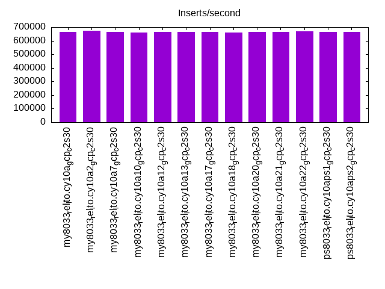
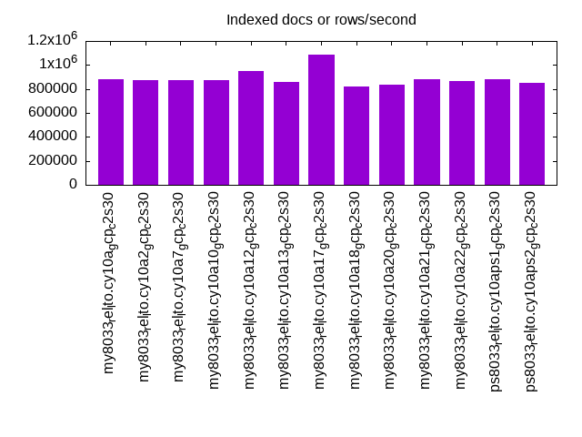
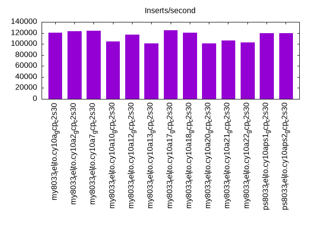
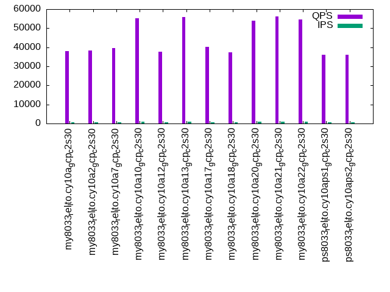
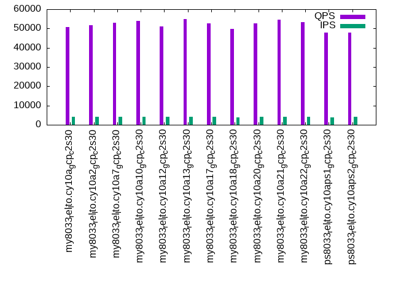
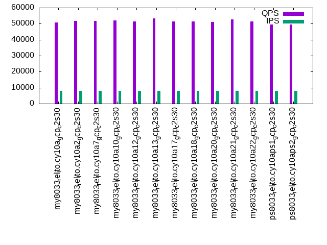

This is a report for the insert benchmark with 160M docs and 8 client(s). It is generated by scripts (bash, awk, sed) and Tufte might not be impressed. An overview of the insert benchmark is here and a short update is here. Below, by DBMS, I mean DBMS+version.config. An example is my8020.c10b40 where my means MySQL, 8020 is version 8.0.20 and c10b40 is the name for the configuration file.
The test server is a c2-standard-30 from GCP with 15 cores, hyperthreads disabled, 120G RAM, XFS + SW RAID 0 on 4 NVMe devices (1.5TB). The benchmark was run with 8 client and there were 1 or 3 connections per client (1 for queries or inserts without rate limits, 1+1 for rate limited inserts+deletes). There are 8 tables, client per table. It loads 20M rows without secondary indexes, creates secondary indexes, then inserts 200M rows with a delete per insert to avoid growing the table. It then does 3 read+write tests for 7200s each that do queries as fast as possible with 100, 500 and then 1000 inserts/second/client concurrent with the queries and 1000 deletes/second to avoid growing the table. The database is cached by InnoDB.
The tested DBMS are:
The numbers are inserts/s for l.i0 and l.i1, indexed docs (or rows) /s for l.x and queries/s for q*.2. The values are the average rate over the entire test for inserts (IPS) and queries (QPS). The range of values for IPS and QPS is split into 3 parts: bottom 25%, middle 50%, top 25%. Values in the bottom 25% have a red background, values in the top 25% have a green background and values in the middle have no color. A gray background is used for values that can be ignored because the DBMS did not sustain the target insert rate. Red backgrounds are not used when the minimum value is within 80% of the max value.
| dbms | l.i0 | l.x | l.i1 | q100.1 | q500.1 | q1000.1 |
|---|---|---|---|---|---|---|
| my8033_rel_lto.cy10a_gcp_c2s30 | 666667 | 884530 | 120782 | 38074 | 50640 | 50829 |
| my8033_rel_lto.cy10a2_gcp_c2s30 | 672269 | 874863 | 123210 | 38390 | 51657 | 51763 |
| my8033_rel_lto.cy10a7_gcp_c2s30 | 663900 | 870109 | 124224 | 39573 | 53112 | 51830 |
| my8033_rel_lto.cy10a10_gcp_c2s30 | 661157 | 870109 | 104200 | 55311 | 53956 | 52155 |
| my8033_rel_lto.cy10a12_gcp_c2s30 | 666667 | 947337 | 117182 | 37770 | 50929 | 51336 |
| my8033_rel_lto.cy10a13_gcp_c2s30 | 663900 | 860753 | 101061 | 55813 | 54968 | 53433 |
| my8033_rel_lto.cy10a17_gcp_c2s30 | 666667 | 1089116 | 124834 | 40208 | 52684 | 51350 |
| my8033_rel_lto.cy10a18_gcp_c2s30 | 658436 | 816837 | 120773 | 37205 | 49653 | 51309 |
| my8033_rel_lto.cy10a20_gcp_c2s30 | 663900 | 838220 | 101356 | 54058 | 52710 | 50966 |
| my8033_rel_lto.cy10a21_gcp_c2s30 | 666667 | 884530 | 106567 | 56027 | 54588 | 52811 |
| my8033_rel_lto.cy10a22_gcp_c2s30 | 669456 | 865405 | 102861 | 54509 | 53186 | 51542 |
| ps8033_rel_lto.cy10aps1_gcp_c2s30 | 666667 | 879670 | 119922 | 36192 | 47979 | 49519 |
| ps8033_rel_lto.cy10aps2_gcp_c2s30 | 663900 | 847090 | 119859 | 36096 | 47870 | 49480 |
This table has relative throughput, throughput for the DBMS relative to the DBMS in the first line, using the absolute throughput from the previous table. Values less than 0.95 have a yellow background. Values greater than 1.05 have a blue background.
| dbms | l.i0 | l.x | l.i1 | q100.1 | q500.1 | q1000.1 |
|---|---|---|---|---|---|---|
| my8033_rel_lto.cy10a_gcp_c2s30 | 1.00 | 1.00 | 1.00 | 1.00 | 1.00 | 1.00 |
| my8033_rel_lto.cy10a2_gcp_c2s30 | 1.01 | 0.99 | 1.02 | 1.01 | 1.02 | 1.02 |
| my8033_rel_lto.cy10a7_gcp_c2s30 | 1.00 | 0.98 | 1.03 | 1.04 | 1.05 | 1.02 |
| my8033_rel_lto.cy10a10_gcp_c2s30 | 0.99 | 0.98 | 0.86 | 1.45 | 1.07 | 1.03 |
| my8033_rel_lto.cy10a12_gcp_c2s30 | 1.00 | 1.07 | 0.97 | 0.99 | 1.01 | 1.01 |
| my8033_rel_lto.cy10a13_gcp_c2s30 | 1.00 | 0.97 | 0.84 | 1.47 | 1.09 | 1.05 |
| my8033_rel_lto.cy10a17_gcp_c2s30 | 1.00 | 1.23 | 1.03 | 1.06 | 1.04 | 1.01 |
| my8033_rel_lto.cy10a18_gcp_c2s30 | 0.99 | 0.92 | 1.00 | 0.98 | 0.98 | 1.01 |
| my8033_rel_lto.cy10a20_gcp_c2s30 | 1.00 | 0.95 | 0.84 | 1.42 | 1.04 | 1.00 |
| my8033_rel_lto.cy10a21_gcp_c2s30 | 1.00 | 1.00 | 0.88 | 1.47 | 1.08 | 1.04 |
| my8033_rel_lto.cy10a22_gcp_c2s30 | 1.00 | 0.98 | 0.85 | 1.43 | 1.05 | 1.01 |
| ps8033_rel_lto.cy10aps1_gcp_c2s30 | 1.00 | 0.99 | 0.99 | 0.95 | 0.95 | 0.97 |
| ps8033_rel_lto.cy10aps2_gcp_c2s30 | 1.00 | 0.96 | 0.99 | 0.95 | 0.95 | 0.97 |
This lists the average rate of inserts/s for the tests that do inserts concurrent with queries. For such tests the query rate is listed in the table above. The read+write tests are setup so that the insert rate should match the target rate every second. Cells that are not at least 95% of the target have a red background to indicate a failure to satisfy the target.
| dbms | q100.1 | q500.1 | q1000.1 |
|---|---|---|---|
| my8033_rel_lto.cy10a_gcp_c2s30 | 789 | 3991 | 7984 |
| my8033_rel_lto.cy10a2_gcp_c2s30 | 789 | 3992 | 7984 |
| my8033_rel_lto.cy10a7_gcp_c2s30 | 789 | 3992 | 7984 |
| my8033_rel_lto.cy10a10_gcp_c2s30 | 798 | 3992 | 7983 |
| my8033_rel_lto.cy10a12_gcp_c2s30 | 789 | 3992 | 7984 |
| my8033_rel_lto.cy10a13_gcp_c2s30 | 798 | 3992 | 7984 |
| my8033_rel_lto.cy10a17_gcp_c2s30 | 795 | 3992 | 7983 |
| my8033_rel_lto.cy10a18_gcp_c2s30 | 788 | 3989 | 7983 |
| my8033_rel_lto.cy10a20_gcp_c2s30 | 798 | 3992 | 7984 |
| my8033_rel_lto.cy10a21_gcp_c2s30 | 798 | 3992 | 7984 |
| my8033_rel_lto.cy10a22_gcp_c2s30 | 798 | 3992 | 7984 |
| ps8033_rel_lto.cy10aps1_gcp_c2s30 | 788 | 3989 | 7984 |
| ps8033_rel_lto.cy10aps2_gcp_c2s30 | 790 | 3990 | 7984 |
| target | 800 | 4000 | 8000 |
l.i0: load without secondary indexes. Graphs for performance per 1-second interval are here.
Average throughput:
Insert response time histogram: each cell has the percentage of responses that take <= the time in the header and max is the max response time in seconds. For the max column values in the top 25% of the range have a red background and in the bottom 25% of the range have a green background. The red background is not used when the min value is within 80% of the max value.
| dbms | 256us | 1ms | 4ms | 16ms | 64ms | 256ms | 1s | 4s | 16s | gt | max |
|---|---|---|---|---|---|---|---|---|---|---|---|
| my8033_rel_lto.cy10a_gcp_c2s30 | 8.364 | 91.556 | 0.040 | 0.026 | 0.014 | 0.232 | |||||
| my8033_rel_lto.cy10a2_gcp_c2s30 | 18.012 | 81.919 | 0.033 | 0.022 | 0.014 | 0.248 | |||||
| my8033_rel_lto.cy10a7_gcp_c2s30 | 7.708 | 92.221 | 0.032 | 0.025 | 0.014 | 0.233 | |||||
| my8033_rel_lto.cy10a10_gcp_c2s30 | 6.776 | 93.137 | 0.041 | 0.032 | 0.014 | 0.243 | |||||
| my8033_rel_lto.cy10a12_gcp_c2s30 | 10.761 | 89.161 | 0.038 | 0.026 | 0.014 | 0.239 | |||||
| my8033_rel_lto.cy10a13_gcp_c2s30 | 9.981 | 89.936 | 0.044 | 0.025 | 0.014 | 0.238 | |||||
| my8033_rel_lto.cy10a17_gcp_c2s30 | 10.246 | 89.676 | 0.034 | 0.029 | 0.014 | 0.217 | |||||
| my8033_rel_lto.cy10a18_gcp_c2s30 | 5.891 | 94.029 | 0.034 | 0.031 | 0.014 | 0.231 | |||||
| my8033_rel_lto.cy10a20_gcp_c2s30 | 7.057 | 92.858 | 0.047 | 0.023 | 0.014 | 0.249 | |||||
| my8033_rel_lto.cy10a21_gcp_c2s30 | 9.727 | 90.200 | 0.035 | 0.024 | 0.014 | 0.229 | |||||
| my8033_rel_lto.cy10a22_gcp_c2s30 | 9.507 | 90.415 | 0.040 | 0.023 | 0.014 | 0.226 | |||||
| ps8033_rel_lto.cy10aps1_gcp_c2s30 | 10.762 | 89.156 | 0.042 | 0.026 | 0.014 | 0.236 | |||||
| ps8033_rel_lto.cy10aps2_gcp_c2s30 | 8.208 | 91.710 | 0.041 | 0.027 | 0.014 | 0.231 |
Performance metrics for the DBMS listed above. Some are normalized by throughput, others are not. Legend for results is here.
ips qps rps rmbps wps wmbps rpq rkbpq wpi wkbpi csps cpups cspq cpupq dbgb1 dbgb2 rss maxop p50 p99 tag 666667 0 0 0.0 1112.1 123.1 0.000 0.000 0.002 0.189 206689 72.8 0.310 16 10.6 139.1 17.2 0.232 90701 71720 160m.my8033_rel_lto.cy10a_gcp_c2s30 672269 0 0 0.0 1331.6 132.0 0.000 0.000 0.002 0.201 221151 73.2 0.329 16 10.6 139.1 17.3 0.248 92401 70324 160m.my8033_rel_lto.cy10a2_gcp_c2s30 663900 0 0 0.0 1107.8 125.4 0.000 0.000 0.002 0.193 204314 72.9 0.308 16 10.6 139.1 17.1 0.233 90934 71619 160m.my8033_rel_lto.cy10a7_gcp_c2s30 661157 0 0 0.0 1105.4 124.1 0.000 0.000 0.002 0.192 205347 73.0 0.311 17 10.6 139.1 17.1 0.243 90332 70346 160m.my8033_rel_lto.cy10a10_gcp_c2s30 666667 0 0 0.0 2612.5 166.7 0.000 0.000 0.004 0.256 213063 72.5 0.320 16 10.6 43.1 17.2 0.239 91102 72122 160m.my8033_rel_lto.cy10a12_gcp_c2s30 663900 0 0 0.0 1113.0 123.4 0.000 0.000 0.002 0.190 206395 72.8 0.311 16 10.6 139.1 17.2 0.238 91234 71890 160m.my8033_rel_lto.cy10a13_gcp_c2s30 666667 0 0 0.0 1024.2 118.1 0.000 0.000 0.002 0.181 200385 73.3 0.301 16 10.6 139.1 17.2 0.217 91401 74344 160m.my8033_rel_lto.cy10a17_gcp_c2s30 658436 0 0 0.0 1255.2 129.8 0.000 0.000 0.002 0.202 205117 73.3 0.312 17 10.6 139.1 17.1 0.231 89502 73819 160m.my8033_rel_lto.cy10a18_gcp_c2s30 663900 0 0 0.0 1098.9 123.7 0.000 0.000 0.002 0.191 203618 73.1 0.307 17 10.6 139.1 17.1 0.249 90489 72621 160m.my8033_rel_lto.cy10a20_gcp_c2s30 666667 0 0 0.0 1101.4 127.5 0.000 0.000 0.002 0.196 216863 73.5 0.325 17 10.6 139.1 17.2 0.229 91202 71160 160m.my8033_rel_lto.cy10a21_gcp_c2s30 669456 0 0 0.0 1104.6 124.8 0.000 0.000 0.002 0.191 206128 73.5 0.308 16 10.6 139.1 17.2 0.226 90902 71522 160m.my8033_rel_lto.cy10a22_gcp_c2s30 666667 0 0 0.0 895.9 120.3 0.000 0.000 0.001 0.185 215257 72.8 0.323 16 10.6 139.1 17.2 0.236 90634 73945 160m.ps8033_rel_lto.cy10aps1_gcp_c2s30 663900 0 0 0.0 891.4 120.8 0.000 0.000 0.001 0.186 205401 73.2 0.309 17 10.6 139.1 17.1 0.231 90301 71282 160m.ps8033_rel_lto.cy10aps2_gcp_c2s30
l.x: create secondary indexes.
Average throughput:
Performance metrics for the DBMS listed above. Some are normalized by throughput, others are not. Legend for results is here.
ips qps rps rmbps wps wmbps rpq rkbpq wpi wkbpi csps cpups cspq cpupq dbgb1 dbgb2 rss maxop p50 p99 tag 884530 0 4451 282.9 18070.7 868.1 0.005 0.328 0.020 1.005 111178 81.1 0.126 14 23.5 152.1 26.7 0.011 NA NA 160m.my8033_rel_lto.cy10a_gcp_c2s30 874863 0 4450 283.0 18064.2 870.5 0.005 0.331 0.021 1.019 96113 82.6 0.110 14 23.5 152.1 26.7 0.004 NA NA 160m.my8033_rel_lto.cy10a2_gcp_c2s30 870109 0 4451 282.9 17824.3 864.4 0.005 0.333 0.020 1.017 89960 80.6 0.103 14 23.5 152.1 25.3 0.005 NA NA 160m.my8033_rel_lto.cy10a7_gcp_c2s30 870109 0 4450 282.9 17811.0 862.8 0.005 0.333 0.020 1.015 99705 82.1 0.115 14 23.5 152.1 26.0 0.005 NA NA 160m.my8033_rel_lto.cy10a10_gcp_c2s30 947337 0 4853 308.6 19541.8 947.5 0.005 0.334 0.021 1.024 63975 77.9 0.068 12 23.5 56.1 26.5 0.005 NA NA 160m.my8033_rel_lto.cy10a12_gcp_c2s30 860753 0 4331 275.3 17633.6 845.8 0.005 0.328 0.020 1.006 111533 81.1 0.130 14 23.5 152.1 26.2 0.015 NA NA 160m.my8033_rel_lto.cy10a13_gcp_c2s30 1089116 0 5516 351.1 16872.5 983.8 0.005 0.330 0.015 0.925 58774 82.9 0.054 11 23.5 152.1 22.8 0.006 NA NA 160m.my8033_rel_lto.cy10a17_gcp_c2s30 816837 0 4111 261.2 16751.3 802.8 0.005 0.327 0.021 1.006 118234 79.8 0.145 15 23.5 152.1 25.5 0.015 NA NA 160m.my8033_rel_lto.cy10a18_gcp_c2s30 838220 0 4219 268.1 17162.7 822.5 0.005 0.328 0.020 1.005 106842 81.7 0.127 15 23.5 152.1 26.5 0.015 NA NA 160m.my8033_rel_lto.cy10a20_gcp_c2s30 884530 0 4452 283.0 18089.6 867.1 0.005 0.328 0.020 1.004 96560 80.6 0.109 14 23.5 152.1 26.1 0.006 NA NA 160m.my8033_rel_lto.cy10a21_gcp_c2s30 865405 0 4336 275.4 17656.5 845.7 0.005 0.326 0.020 1.001 107740 81.4 0.124 14 23.5 152.1 26.5 0.004 NA NA 160m.my8033_rel_lto.cy10a22_gcp_c2s30 879670 0 4453 282.9 17863.6 862.7 0.005 0.329 0.020 1.004 105895 82.8 0.120 14 23.5 152.1 25.8 0.004 NA NA 160m.ps8033_rel_lto.cy10aps1_gcp_c2s30 847090 0 4330 275.3 17306.8 837.4 0.005 0.333 0.020 1.012 109796 82.0 0.130 15 23.5 152.1 26.4 0.004 NA NA 160m.ps8033_rel_lto.cy10aps2_gcp_c2s30
l.i1: continue load after secondary indexes created. Graphs for performance per 1-second interval are here.
Average throughput:
Insert response time histogram: each cell has the percentage of responses that take <= the time in the header and max is the max response time in seconds. For the max column values in the top 25% of the range have a red background and in the bottom 25% of the range have a green background. The red background is not used when the min value is within 80% of the max value.
| dbms | 256us | 1ms | 4ms | 16ms | 64ms | 256ms | 1s | 4s | 16s | gt | max |
|---|---|---|---|---|---|---|---|---|---|---|---|
| my8033_rel_lto.cy10a_gcp_c2s30 | 82.368 | 17.549 | 0.064 | 0.018 | 0.001 | nonzero | 1.015 | ||||
| my8033_rel_lto.cy10a2_gcp_c2s30 | 83.596 | 16.352 | 0.034 | 0.017 | 0.001 | 0.706 | |||||
| my8033_rel_lto.cy10a7_gcp_c2s30 | 84.506 | 15.416 | 0.059 | 0.017 | 0.001 | 0.388 | |||||
| my8033_rel_lto.cy10a10_gcp_c2s30 | 66.268 | 33.581 | 0.132 | 0.017 | 0.002 | 0.434 | |||||
| my8033_rel_lto.cy10a12_gcp_c2s30 | 82.124 | 17.817 | 0.026 | 0.017 | 0.007 | 0.009 | 1.028 | ||||
| my8033_rel_lto.cy10a13_gcp_c2s30 | 62.963 | 36.845 | 0.173 | 0.018 | 0.001 | 0.406 | |||||
| my8033_rel_lto.cy10a17_gcp_c2s30 | 85.161 | 14.720 | 0.103 | 0.016 | 0.001 | 0.664 | |||||
| my8033_rel_lto.cy10a18_gcp_c2s30 | 82.360 | 17.555 | 0.066 | 0.015 | 0.004 | 0.531 | |||||
| my8033_rel_lto.cy10a20_gcp_c2s30 | 63.233 | 36.600 | 0.148 | 0.018 | 0.001 | 0.330 | |||||
| my8033_rel_lto.cy10a21_gcp_c2s30 | 68.448 | 31.386 | 0.148 | 0.017 | 0.001 | 0.405 | |||||
| my8033_rel_lto.cy10a22_gcp_c2s30 | 64.814 | 35.028 | 0.139 | 0.017 | 0.002 | 0.373 | |||||
| ps8033_rel_lto.cy10aps1_gcp_c2s30 | 81.818 | 18.086 | 0.077 | 0.016 | 0.003 | 0.742 | |||||
| ps8033_rel_lto.cy10aps2_gcp_c2s30 | 81.635 | 18.276 | 0.071 | 0.018 | nonzero | 0.866 |
Delete response time histogram: each cell has the percentage of responses that take <= the time in the header and max is the max response time in seconds. For the max column values in the top 25% of the range have a red background and in the bottom 25% of the range have a green background. The red background is not used when the min value is within 80% of the max value.
| dbms | 256us | 1ms | 4ms | 16ms | 64ms | 256ms | 1s | 4s | 16s | gt | max |
|---|---|---|---|---|---|---|---|---|---|---|---|
| my8033_rel_lto.cy10a_gcp_c2s30 | 84.289 | 15.630 | 0.066 | 0.014 | nonzero | nonzero | 1.019 | ||||
| my8033_rel_lto.cy10a2_gcp_c2s30 | 85.466 | 14.480 | 0.039 | 0.014 | 0.001 | 0.692 | |||||
| my8033_rel_lto.cy10a7_gcp_c2s30 | 85.934 | 13.990 | 0.061 | 0.014 | 0.001 | 0.549 | |||||
| my8033_rel_lto.cy10a10_gcp_c2s30 | 75.758 | 24.124 | 0.103 | 0.013 | 0.002 | 0.401 | |||||
| my8033_rel_lto.cy10a12_gcp_c2s30 | 84.697 | 15.239 | 0.035 | 0.014 | 0.007 | 0.008 | 1.030 | ||||
| my8033_rel_lto.cy10a13_gcp_c2s30 | 73.670 | 26.178 | 0.137 | 0.014 | nonzero | 0.308 | |||||
| my8033_rel_lto.cy10a17_gcp_c2s30 | 85.721 | 14.147 | 0.115 | 0.016 | 0.001 | 0.654 | |||||
| my8033_rel_lto.cy10a18_gcp_c2s30 | 84.253 | 15.656 | 0.076 | 0.012 | 0.004 | 0.540 | |||||
| my8033_rel_lto.cy10a20_gcp_c2s30 | 73.845 | 26.023 | 0.118 | 0.013 | 0.001 | 0.308 | |||||
| my8033_rel_lto.cy10a21_gcp_c2s30 | 77.507 | 22.358 | 0.121 | 0.013 | 0.001 | 0.375 | |||||
| my8033_rel_lto.cy10a22_gcp_c2s30 | 74.376 | 25.499 | 0.110 | 0.014 | 0.002 | 0.361 | |||||
| ps8033_rel_lto.cy10aps1_gcp_c2s30 | 83.523 | 16.376 | 0.086 | 0.012 | 0.003 | 0.679 | |||||
| ps8033_rel_lto.cy10aps2_gcp_c2s30 | 83.397 | 16.515 | 0.073 | 0.015 | nonzero | 0.865 |
Performance metrics for the DBMS listed above. Some are normalized by throughput, others are not. Legend for results is here.
ips qps rps rmbps wps wmbps rpq rkbpq wpi wkbpi csps cpups cspq cpupq dbgb1 dbgb2 rss maxop p50 p99 tag 120782 0 873 13.6 9359.0 324.0 0.007 0.116 0.077 2.747 169939 86.0 1.407 107 148.2 334.7 86.9 1.015 15283 11587 160m.my8033_rel_lto.cy10a_gcp_c2s30 123210 0 892 13.9 11396.0 381.4 0.007 0.116 0.092 3.170 177201 85.9 1.438 105 147.5 336.9 86.9 0.706 15583 11687 160m.my8033_rel_lto.cy10a2_gcp_c2s30 124224 0 834 13.0 9327.0 325.2 0.007 0.107 0.075 2.680 177310 85.8 1.427 104 145.5 337.0 86.9 0.388 15731 11887 160m.my8033_rel_lto.cy10a7_gcp_c2s30 104200 0 48 0.7 6476.6 249.3 0.000 0.007 0.062 2.449 178720 84.6 1.715 122 34.2 163.2 41.1 0.434 13248 9394 160m.my8033_rel_lto.cy10a10_gcp_c2s30 117182 0 854 13.3 16058.8 504.8 0.007 0.117 0.137 4.411 178673 83.1 1.525 106 148.8 240.5 86.9 1.028 15283 2347 160m.my8033_rel_lto.cy10a12_gcp_c2s30 101061 0 46 0.7 6291.1 242.6 0.000 0.007 0.062 2.458 172335 84.9 1.705 126 32.8 161.6 39.6 0.406 12886 8792 160m.my8033_rel_lto.cy10a13_gcp_c2s30 124834 0 738 11.5 8262.9 199.7 0.006 0.095 0.066 1.638 174639 85.8 1.399 103 143.6 336.7 86.9 0.664 15739 12337 160m.my8033_rel_lto.cy10a17_gcp_c2s30 120773 0 948 14.8 9577.6 330.0 0.008 0.126 0.079 2.798 170276 85.7 1.410 106 150.9 353.5 86.9 0.531 15289 10892 160m.my8033_rel_lto.cy10a18_gcp_c2s30 101356 0 46 0.7 6324.2 242.7 0.000 0.007 0.062 2.452 172744 84.9 1.704 126 34.0 162.9 40.9 0.330 12886 9440 160m.my8033_rel_lto.cy10a20_gcp_c2s30 106567 0 49 0.8 6553.3 252.7 0.000 0.007 0.061 2.428 182174 84.4 1.709 119 34.0 162.9 40.9 0.405 13539 9697 160m.my8033_rel_lto.cy10a21_gcp_c2s30 102861 0 47 0.7 6412.5 246.6 0.000 0.007 0.062 2.455 176151 84.9 1.713 124 33.8 162.7 40.6 0.373 13079 9240 160m.my8033_rel_lto.cy10a22_gcp_c2s30 119922 0 925 14.5 8504.1 299.7 0.008 0.123 0.071 2.559 166548 86.0 1.389 108 149.9 332.2 86.9 0.742 15183 11188 160m.ps8033_rel_lto.cy10aps1_gcp_c2s30 119859 0 914 14.3 8493.4 299.6 0.008 0.122 0.071 2.559 165056 86.1 1.377 108 149.9 333.3 86.9 0.866 15141 11587 160m.ps8033_rel_lto.cy10aps2_gcp_c2s30
q100.1: range queries with 100 insert/s per client. Graphs for performance per 1-second interval are here.
Average throughput:
Query response time histogram: each cell has the percentage of responses that take <= the time in the header and max is the max response time in seconds. For max values in the top 25% of the range have a red background and in the bottom 25% of the range have a green background. The red background is not used when the min value is within 80% of the max value.
| dbms | 256us | 1ms | 4ms | 16ms | 64ms | 256ms | 1s | 4s | 16s | gt | max |
|---|---|---|---|---|---|---|---|---|---|---|---|
| my8033_rel_lto.cy10a_gcp_c2s30 | 91.646 | 8.300 | 0.054 | nonzero | nonzero | nonzero | 0.247 | ||||
| my8033_rel_lto.cy10a2_gcp_c2s30 | 91.828 | 8.121 | 0.050 | nonzero | nonzero | nonzero | 0.231 | ||||
| my8033_rel_lto.cy10a7_gcp_c2s30 | 94.292 | 5.664 | 0.044 | nonzero | nonzero | nonzero | 0.224 | ||||
| my8033_rel_lto.cy10a10_gcp_c2s30 | 99.797 | 0.201 | 0.002 | nonzero | 0.012 | ||||||
| my8033_rel_lto.cy10a12_gcp_c2s30 | 91.058 | 8.886 | 0.055 | nonzero | nonzero | nonzero | 0.226 | ||||
| my8033_rel_lto.cy10a13_gcp_c2s30 | 99.814 | 0.184 | 0.002 | nonzero | nonzero | nonzero | 0.111 | ||||
| my8033_rel_lto.cy10a17_gcp_c2s30 | 94.396 | 5.560 | 0.044 | 0.001 | nonzero | nonzero | 0.207 | ||||
| my8033_rel_lto.cy10a18_gcp_c2s30 | 89.318 | 10.616 | 0.066 | nonzero | nonzero | nonzero | 0.235 | ||||
| my8033_rel_lto.cy10a20_gcp_c2s30 | 99.772 | 0.226 | 0.002 | nonzero | 0.013 | ||||||
| my8033_rel_lto.cy10a21_gcp_c2s30 | 99.842 | 0.156 | 0.002 | nonzero | 0.012 | ||||||
| my8033_rel_lto.cy10a22_gcp_c2s30 | 99.753 | 0.245 | 0.002 | nonzero | 0.013 | ||||||
| ps8033_rel_lto.cy10aps1_gcp_c2s30 | 86.507 | 13.380 | 0.113 | nonzero | nonzero | nonzero | 0.233 | ||||
| ps8033_rel_lto.cy10aps2_gcp_c2s30 | 86.150 | 13.756 | 0.094 | nonzero | nonzero | nonzero | 0.227 |
Insert response time histogram: each cell has the percentage of responses that take <= the time in the header and max is the max response time in seconds. For max values in the top 25% of the range have a red background and in the bottom 25% of the range have a green background. The red background is not used when the min value is within 80% of the max value.
| dbms | 256us | 1ms | 4ms | 16ms | 64ms | 256ms | 1s | 4s | 16s | gt | max |
|---|---|---|---|---|---|---|---|---|---|---|---|
| my8033_rel_lto.cy10a_gcp_c2s30 | 95.572 | 4.416 | 0.010 | 0.001 | 0.001 | 0.457 | |||||
| my8033_rel_lto.cy10a2_gcp_c2s30 | 97.144 | 2.841 | 0.012 | 0.001 | 0.002 | 0.323 | |||||
| my8033_rel_lto.cy10a7_gcp_c2s30 | 96.352 | 3.639 | 0.010 | 0.026 | |||||||
| my8033_rel_lto.cy10a10_gcp_c2s30 | 93.662 | 6.338 | 0.014 | ||||||||
| my8033_rel_lto.cy10a12_gcp_c2s30 | 96.013 | 3.971 | 0.011 | 0.001 | 0.003 | 0.438 | |||||
| my8033_rel_lto.cy10a13_gcp_c2s30 | 93.773 | 6.227 | 0.015 | ||||||||
| my8033_rel_lto.cy10a17_gcp_c2s30 | 96.964 | 3.014 | 0.022 | 0.033 | |||||||
| my8033_rel_lto.cy10a18_gcp_c2s30 | 95.293 | 4.697 | 0.010 | 0.026 | |||||||
| my8033_rel_lto.cy10a20_gcp_c2s30 | 93.076 | 6.924 | 0.016 | ||||||||
| my8033_rel_lto.cy10a21_gcp_c2s30 | 93.875 | 6.125 | 0.015 | ||||||||
| my8033_rel_lto.cy10a22_gcp_c2s30 | 93.702 | 6.298 | 0.016 | ||||||||
| ps8033_rel_lto.cy10aps1_gcp_c2s30 | 96.829 | 3.159 | 0.012 | 0.043 | |||||||
| ps8033_rel_lto.cy10aps2_gcp_c2s30 | 95.234 | 4.749 | 0.016 | 0.050 |
Delete response time histogram: each cell has the percentage of responses that take <= the time in the header and max is the max response time in seconds. For max values in the top 25% of the range have a red background and in the bottom 25% of the range have a green background. The red background is not used when the min value is within 80% of the max value.
| dbms | 256us | 1ms | 4ms | 16ms | 64ms | 256ms | 1s | 4s | 16s | gt | max |
|---|---|---|---|---|---|---|---|---|---|---|---|
| my8033_rel_lto.cy10a_gcp_c2s30 | 96.365 | 3.627 | 0.007 | 0.001 | 0.001 | 0.457 | |||||
| my8033_rel_lto.cy10a2_gcp_c2s30 | 97.687 | 2.301 | 0.010 | 0.001 | 0.002 | 0.323 | |||||
| my8033_rel_lto.cy10a7_gcp_c2s30 | 96.948 | 3.046 | 0.006 | 0.026 | |||||||
| my8033_rel_lto.cy10a10_gcp_c2s30 | 96.168 | 3.832 | 0.014 | ||||||||
| my8033_rel_lto.cy10a12_gcp_c2s30 | 96.715 | 3.273 | 0.008 | 0.001 | 0.003 | 0.438 | |||||
| my8033_rel_lto.cy10a13_gcp_c2s30 | 96.320 | 3.679 | 0.001 | 0.017 | |||||||
| my8033_rel_lto.cy10a17_gcp_c2s30 | 97.449 | 2.532 | 0.019 | 0.044 | |||||||
| my8033_rel_lto.cy10a18_gcp_c2s30 | 96.254 | 3.737 | 0.009 | 0.026 | |||||||
| my8033_rel_lto.cy10a20_gcp_c2s30 | 95.989 | 4.010 | 0.001 | 0.017 | |||||||
| my8033_rel_lto.cy10a21_gcp_c2s30 | 96.324 | 3.676 | 0.014 | ||||||||
| my8033_rel_lto.cy10a22_gcp_c2s30 | 96.168 | 3.832 | 0.015 | ||||||||
| ps8033_rel_lto.cy10aps1_gcp_c2s30 | 97.356 | 2.635 | 0.009 | 0.043 | |||||||
| ps8033_rel_lto.cy10aps2_gcp_c2s30 | 96.053 | 3.936 | 0.011 | 0.050 |
Performance metrics for the DBMS listed above. Some are normalized by throughput, others are not. Legend for results is here.
ips qps rps rmbps wps wmbps rpq rkbpq wpi wkbpi csps cpups cspq cpupq dbgb1 dbgb2 rss maxop p50 p99 tag 789 38074 2445 38.2 7082.7 198.2 0.064 1.028 8.981 257.334 154933 70.4 4.069 277 148.2 301.9 87.0 0.247 4923 3868 160m.my8033_rel_lto.cy10a_gcp_c2s30 789 38390 2300 35.9 8570.7 239.3 0.060 0.959 10.868 310.784 161200 70.3 4.199 275 147.5 307.2 87.0 0.231 4987 4154 160m.my8033_rel_lto.cy10a2_gcp_c2s30 789 39573 2007 31.4 6119.1 172.2 0.051 0.811 7.758 223.611 155476 70.8 3.929 268 145.5 274.4 87.0 0.224 5082 4219 160m.my8033_rel_lto.cy10a7_gcp_c2s30 798 55311 0 0.0 185.7 5.4 0.000 0.000 0.233 6.988 212642 54.3 3.844 147 34.2 163.2 41.1 0.012 6952 6793 160m.my8033_rel_lto.cy10a10_gcp_c2s30 789 37770 2613 40.8 10179.7 283.4 0.069 1.107 12.907 367.982 162647 70.5 4.306 280 148.8 209.2 87.0 0.226 4875 3964 160m.my8033_rel_lto.cy10a12_gcp_c2s30 798 55813 0 0.0 175.3 5.2 0.000 0.000 0.220 6.613 214513 54.1 3.843 145 32.8 161.6 39.6 0.111 7016 6617 160m.my8033_rel_lto.cy10a13_gcp_c2s30 795 40208 1716 26.8 5000.2 87.1 0.043 0.683 6.292 112.264 157208 70.5 3.910 263 143.6 310.5 87.0 0.207 5084 4395 160m.my8033_rel_lto.cy10a17_gcp_c2s30 788 37205 3081 48.1 8173.0 227.4 0.083 1.325 10.369 295.369 157301 70.0 4.228 282 150.9 329.4 87.0 0.235 4797 3692 160m.my8033_rel_lto.cy10a18_gcp_c2s30 798 54058 0 0.0 174.5 5.1 0.000 0.000 0.219 6.593 207865 54.3 3.845 151 34.0 162.9 40.9 0.013 6745 6601 160m.my8033_rel_lto.cy10a20_gcp_c2s30 798 56027 0 0.0 186.0 5.4 0.000 0.000 0.233 6.990 215305 54.1 3.843 145 34.0 162.9 40.9 0.012 7001 6841 160m.my8033_rel_lto.cy10a21_gcp_c2s30 798 54509 0 0.0 183.0 5.4 0.000 0.000 0.229 6.894 209568 54.3 3.845 149 33.8 162.7 40.7 0.013 6777 6633 160m.my8033_rel_lto.cy10a22_gcp_c2s30 788 36192 2986 46.7 7248.6 208.0 0.083 1.320 9.196 270.246 154294 69.3 4.263 287 149.9 292.6 87.0 0.233 4683 2382 160m.ps8033_rel_lto.cy10aps1_gcp_c2s30 790 36096 2963 46.3 7189.8 206.7 0.082 1.313 9.106 268.059 151312 69.9 4.192 290 149.9 295.2 87.0 0.227 4667 2574 160m.ps8033_rel_lto.cy10aps2_gcp_c2s30
q500.1: range queries with 500 insert/s per client. Graphs for performance per 1-second interval are here.
Average throughput:
Query response time histogram: each cell has the percentage of responses that take <= the time in the header and max is the max response time in seconds. For max values in the top 25% of the range have a red background and in the bottom 25% of the range have a green background. The red background is not used when the min value is within 80% of the max value.
| dbms | 256us | 1ms | 4ms | 16ms | 64ms | 256ms | 1s | 4s | 16s | gt | max |
|---|---|---|---|---|---|---|---|---|---|---|---|
| my8033_rel_lto.cy10a_gcp_c2s30 | 99.235 | 0.757 | 0.008 | 0.001 | nonzero | 0.022 | |||||
| my8033_rel_lto.cy10a2_gcp_c2s30 | 99.346 | 0.644 | 0.009 | 0.001 | nonzero | nonzero | nonzero | 0.694 | |||
| my8033_rel_lto.cy10a7_gcp_c2s30 | 99.561 | 0.418 | 0.018 | 0.003 | nonzero | 0.029 | |||||
| my8033_rel_lto.cy10a10_gcp_c2s30 | 99.583 | 0.396 | 0.018 | 0.002 | nonzero | 0.028 | |||||
| my8033_rel_lto.cy10a12_gcp_c2s30 | 99.170 | 0.818 | 0.011 | 0.001 | nonzero | 0.027 | |||||
| my8033_rel_lto.cy10a13_gcp_c2s30 | 99.684 | 0.295 | 0.019 | 0.002 | nonzero | 0.027 | |||||
| my8033_rel_lto.cy10a17_gcp_c2s30 | 99.466 | 0.517 | 0.014 | 0.003 | nonzero | 0.028 | |||||
| my8033_rel_lto.cy10a18_gcp_c2s30 | 99.004 | 0.988 | 0.007 | 0.001 | nonzero | nonzero | nonzero | 0.689 | |||
| my8033_rel_lto.cy10a20_gcp_c2s30 | 99.533 | 0.445 | 0.019 | 0.002 | nonzero | 0.034 | |||||
| my8033_rel_lto.cy10a21_gcp_c2s30 | 99.661 | 0.320 | 0.017 | 0.002 | nonzero | 0.027 | |||||
| my8033_rel_lto.cy10a22_gcp_c2s30 | 99.491 | 0.488 | 0.018 | 0.002 | nonzero | 0.028 | |||||
| ps8033_rel_lto.cy10aps1_gcp_c2s30 | 98.685 | 1.306 | 0.008 | 0.001 | nonzero | 0.056 | |||||
| ps8033_rel_lto.cy10aps2_gcp_c2s30 | 98.682 | 1.307 | 0.010 | 0.002 | nonzero | 0.026 |
Insert response time histogram: each cell has the percentage of responses that take <= the time in the header and max is the max response time in seconds. For max values in the top 25% of the range have a red background and in the bottom 25% of the range have a green background. The red background is not used when the min value is within 80% of the max value.
| dbms | 256us | 1ms | 4ms | 16ms | 64ms | 256ms | 1s | 4s | 16s | gt | max |
|---|---|---|---|---|---|---|---|---|---|---|---|
| my8033_rel_lto.cy10a_gcp_c2s30 | 97.897 | 2.072 | 0.030 | 0.001 | 0.177 | ||||||
| my8033_rel_lto.cy10a2_gcp_c2s30 | 93.919 | 5.924 | 0.156 | 0.001 | 0.697 | ||||||
| my8033_rel_lto.cy10a7_gcp_c2s30 | 76.207 | 23.043 | 0.751 | 0.037 | |||||||
| my8033_rel_lto.cy10a10_gcp_c2s30 | 74.533 | 24.311 | 1.156 | 0.041 | |||||||
| my8033_rel_lto.cy10a12_gcp_c2s30 | 92.788 | 7.079 | 0.133 | 0.034 | |||||||
| my8033_rel_lto.cy10a13_gcp_c2s30 | 74.766 | 24.286 | 0.948 | 0.042 | |||||||
| my8033_rel_lto.cy10a17_gcp_c2s30 | 82.967 | 16.407 | 0.624 | nonzero | 0.001 | 1.358 | |||||
| my8033_rel_lto.cy10a18_gcp_c2s30 | 98.145 | 1.827 | 0.027 | 0.001 | nonzero | 0.636 | |||||
| my8033_rel_lto.cy10a20_gcp_c2s30 | 73.969 | 24.889 | 1.142 | 0.044 | |||||||
| my8033_rel_lto.cy10a21_gcp_c2s30 | 76.577 | 22.459 | 0.965 | 0.040 | |||||||
| my8033_rel_lto.cy10a22_gcp_c2s30 | 75.139 | 23.834 | 1.027 | 0.041 | |||||||
| ps8033_rel_lto.cy10aps1_gcp_c2s30 | 96.464 | 3.489 | 0.046 | nonzero | 0.076 | ||||||
| ps8033_rel_lto.cy10aps2_gcp_c2s30 | 93.661 | 6.181 | 0.158 | 0.036 |
Delete response time histogram: each cell has the percentage of responses that take <= the time in the header and max is the max response time in seconds. For max values in the top 25% of the range have a red background and in the bottom 25% of the range have a green background. The red background is not used when the min value is within 80% of the max value.
| dbms | 256us | 1ms | 4ms | 16ms | 64ms | 256ms | 1s | 4s | 16s | gt | max |
|---|---|---|---|---|---|---|---|---|---|---|---|
| my8033_rel_lto.cy10a_gcp_c2s30 | 98.569 | 1.410 | 0.020 | 0.001 | 0.177 | ||||||
| my8033_rel_lto.cy10a2_gcp_c2s30 | 95.216 | 4.679 | 0.104 | 0.001 | 0.695 | ||||||
| my8033_rel_lto.cy10a7_gcp_c2s30 | 81.209 | 18.247 | 0.543 | 0.038 | |||||||
| my8033_rel_lto.cy10a10_gcp_c2s30 | 81.165 | 18.078 | 0.756 | 0.038 | |||||||
| my8033_rel_lto.cy10a12_gcp_c2s30 | 94.615 | 5.288 | 0.097 | 0.034 | |||||||
| my8033_rel_lto.cy10a13_gcp_c2s30 | 81.214 | 18.175 | 0.611 | 0.042 | |||||||
| my8033_rel_lto.cy10a17_gcp_c2s30 | 86.487 | 13.044 | 0.467 | nonzero | 0.001 | 1.357 | |||||
| my8033_rel_lto.cy10a18_gcp_c2s30 | 98.779 | 1.202 | 0.019 | nonzero | 0.090 | ||||||
| my8033_rel_lto.cy10a20_gcp_c2s30 | 80.615 | 18.654 | 0.731 | 0.039 | |||||||
| my8033_rel_lto.cy10a21_gcp_c2s30 | 82.747 | 16.660 | 0.592 | 0.038 | |||||||
| my8033_rel_lto.cy10a22_gcp_c2s30 | 81.508 | 17.843 | 0.648 | 0.041 | |||||||
| ps8033_rel_lto.cy10aps1_gcp_c2s30 | 97.613 | 2.357 | 0.030 | nonzero | 0.082 | ||||||
| ps8033_rel_lto.cy10aps2_gcp_c2s30 | 95.090 | 4.792 | 0.118 | 0.034 |
Performance metrics for the DBMS listed above. Some are normalized by throughput, others are not. Legend for results is here.
ips qps rps rmbps wps wmbps rpq rkbpq wpi wkbpi csps cpups cspq cpupq dbgb1 dbgb2 rss maxop p50 p99 tag 3991 50640 128 2.0 994.2 30.6 0.003 0.040 0.249 7.842 196716 58.6 3.885 174 148.2 277.3 87.0 0.022 6511 5101 160m.my8033_rel_lto.cy10a_gcp_c2s30 3992 51657 106 1.7 902.3 27.7 0.002 0.033 0.226 7.096 200703 58.0 3.885 168 147.5 276.5 87.0 0.694 6569 5130 160m.my8033_rel_lto.cy10a2_gcp_c2s30 3992 53112 29 0.5 621.6 19.0 0.001 0.009 0.156 4.870 205050 56.2 3.861 159 145.5 274.4 87.0 0.029 6633 6521 160m.my8033_rel_lto.cy10a7_gcp_c2s30 3992 53956 0 0.0 553.9 17.6 0.000 0.000 0.139 4.512 207933 56.2 3.854 156 34.2 163.2 41.1 0.028 6792 6681 160m.my8033_rel_lto.cy10a10_gcp_c2s30 3992 50929 140 2.2 1985.0 58.2 0.003 0.044 0.497 14.943 199426 58.9 3.916 173 148.8 182.0 87.0 0.027 6585 5066 160m.my8033_rel_lto.cy10a12_gcp_c2s30 3992 54968 0 0.0 560.4 17.8 0.000 0.000 0.140 4.560 211906 56.1 3.855 153 32.8 161.6 39.6 0.027 6841 6713 160m.my8033_rel_lto.cy10a13_gcp_c2s30 3992 52684 30 0.5 562.8 10.8 0.001 0.009 0.141 2.781 204137 56.3 3.875 160 143.6 272.6 86.9 0.028 6601 6441 160m.my8033_rel_lto.cy10a17_gcp_c2s30 3989 49653 203 3.2 1354.0 41.4 0.004 0.065 0.339 10.628 191932 60.2 3.865 182 150.9 280.4 87.0 0.689 6505 5037 160m.my8033_rel_lto.cy10a18_gcp_c2s30 3992 52710 0 0.0 556.2 17.7 0.000 0.000 0.139 4.532 203354 56.3 3.858 160 34.0 162.9 40.8 0.034 6587 6473 160m.my8033_rel_lto.cy10a20_gcp_c2s30 3992 54588 0 0.0 550.6 17.5 0.000 0.000 0.138 4.488 210498 56.1 3.856 154 34.0 162.9 40.8 0.027 6827 6713 160m.my8033_rel_lto.cy10a21_gcp_c2s30 3992 53186 0 0.0 553.8 17.6 0.000 0.000 0.139 4.507 205043 56.2 3.855 159 33.8 162.7 40.6 0.028 6633 6521 160m.my8033_rel_lto.cy10a22_gcp_c2s30 3989 47979 221 3.5 1033.9 32.8 0.005 0.074 0.259 8.407 184380 60.7 3.843 190 149.9 279.0 87.0 0.056 6313 4907 160m.ps8033_rel_lto.cy10aps1_gcp_c2s30 3990 47870 198 3.1 994.0 31.3 0.004 0.066 0.249 8.033 184501 60.0 3.854 188 149.9 279.0 87.0 0.026 6265 4891 160m.ps8033_rel_lto.cy10aps2_gcp_c2s30
q1000.1: range queries with 1000 insert/s per client. Graphs for performance per 1-second interval are here.
Average throughput:
Query response time histogram: each cell has the percentage of responses that take <= the time in the header and max is the max response time in seconds. For max values in the top 25% of the range have a red background and in the bottom 25% of the range have a green background. The red background is not used when the min value is within 80% of the max value.
| dbms | 256us | 1ms | 4ms | 16ms | 64ms | 256ms | 1s | 4s | 16s | gt | max |
|---|---|---|---|---|---|---|---|---|---|---|---|
| my8033_rel_lto.cy10a_gcp_c2s30 | 99.378 | 0.592 | 0.026 | 0.004 | nonzero | 0.031 | |||||
| my8033_rel_lto.cy10a2_gcp_c2s30 | 99.450 | 0.520 | 0.026 | 0.003 | nonzero | 0.029 | |||||
| my8033_rel_lto.cy10a7_gcp_c2s30 | 99.450 | 0.518 | 0.028 | 0.003 | nonzero | 0.027 | |||||
| my8033_rel_lto.cy10a10_gcp_c2s30 | 99.327 | 0.638 | 0.031 | 0.004 | nonzero | 0.030 | |||||
| my8033_rel_lto.cy10a12_gcp_c2s30 | 99.344 | 0.624 | 0.028 | 0.004 | nonzero | 0.028 | |||||
| my8033_rel_lto.cy10a13_gcp_c2s30 | 99.535 | 0.436 | 0.026 | 0.003 | nonzero | 0.028 | |||||
| my8033_rel_lto.cy10a17_gcp_c2s30 | 99.394 | 0.574 | 0.028 | 0.004 | nonzero | 0.029 | |||||
| my8033_rel_lto.cy10a18_gcp_c2s30 | 99.391 | 0.573 | 0.031 | 0.004 | nonzero | 0.037 | |||||
| my8033_rel_lto.cy10a20_gcp_c2s30 | 99.258 | 0.706 | 0.031 | 0.004 | nonzero | 0.028 | |||||
| my8033_rel_lto.cy10a21_gcp_c2s30 | 99.443 | 0.522 | 0.031 | 0.004 | nonzero | 0.028 | |||||
| my8033_rel_lto.cy10a22_gcp_c2s30 | 99.228 | 0.732 | 0.035 | 0.005 | nonzero | 0.027 | |||||
| ps8033_rel_lto.cy10aps1_gcp_c2s30 | 99.184 | 0.783 | 0.029 | 0.004 | nonzero | 0.044 | |||||
| ps8033_rel_lto.cy10aps2_gcp_c2s30 | 99.188 | 0.778 | 0.030 | 0.004 | nonzero | 0.030 |
Insert response time histogram: each cell has the percentage of responses that take <= the time in the header and max is the max response time in seconds. For max values in the top 25% of the range have a red background and in the bottom 25% of the range have a green background. The red background is not used when the min value is within 80% of the max value.
| dbms | 256us | 1ms | 4ms | 16ms | 64ms | 256ms | 1s | 4s | 16s | gt | max |
|---|---|---|---|---|---|---|---|---|---|---|---|
| my8033_rel_lto.cy10a_gcp_c2s30 | 87.421 | 12.093 | 0.485 | 0.038 | |||||||
| my8033_rel_lto.cy10a2_gcp_c2s30 | 87.755 | 11.780 | 0.465 | nonzero | 0.070 | ||||||
| my8033_rel_lto.cy10a7_gcp_c2s30 | 86.334 | 12.994 | 0.673 | 0.043 | |||||||
| my8033_rel_lto.cy10a10_gcp_c2s30 | 81.213 | 17.533 | 1.254 | 0.052 | |||||||
| my8033_rel_lto.cy10a12_gcp_c2s30 | 86.341 | 13.069 | 0.589 | 0.036 | |||||||
| my8033_rel_lto.cy10a13_gcp_c2s30 | 84.666 | 14.438 | 0.895 | 0.046 | |||||||
| my8033_rel_lto.cy10a17_gcp_c2s30 | 86.099 | 13.374 | 0.526 | 0.042 | |||||||
| my8033_rel_lto.cy10a18_gcp_c2s30 | 83.968 | 15.440 | 0.592 | 0.043 | |||||||
| my8033_rel_lto.cy10a20_gcp_c2s30 | 80.434 | 18.327 | 1.239 | 0.047 | |||||||
| my8033_rel_lto.cy10a21_gcp_c2s30 | 81.634 | 17.250 | 1.116 | 0.049 | |||||||
| my8033_rel_lto.cy10a22_gcp_c2s30 | 78.261 | 20.275 | 1.464 | 0.053 | |||||||
| ps8033_rel_lto.cy10aps1_gcp_c2s30 | 85.841 | 13.525 | 0.634 | 0.047 | |||||||
| ps8033_rel_lto.cy10aps2_gcp_c2s30 | 85.130 | 14.299 | 0.572 | 0.046 |
Delete response time histogram: each cell has the percentage of responses that take <= the time in the header and max is the max response time in seconds. For max values in the top 25% of the range have a red background and in the bottom 25% of the range have a green background. The red background is not used when the min value is within 80% of the max value.
| dbms | 256us | 1ms | 4ms | 16ms | 64ms | 256ms | 1s | 4s | 16s | gt | max |
|---|---|---|---|---|---|---|---|---|---|---|---|
| my8033_rel_lto.cy10a_gcp_c2s30 | 89.934 | 9.702 | 0.364 | 0.048 | |||||||
| my8033_rel_lto.cy10a2_gcp_c2s30 | 90.024 | 9.625 | 0.351 | 0.043 | |||||||
| my8033_rel_lto.cy10a7_gcp_c2s30 | 88.875 | 10.608 | 0.517 | 0.047 | |||||||
| my8033_rel_lto.cy10a10_gcp_c2s30 | 85.956 | 13.185 | 0.859 | 0.047 | |||||||
| my8033_rel_lto.cy10a12_gcp_c2s30 | 88.984 | 10.554 | 0.463 | 0.039 | |||||||
| my8033_rel_lto.cy10a13_gcp_c2s30 | 88.690 | 10.705 | 0.606 | 0.042 | |||||||
| my8033_rel_lto.cy10a17_gcp_c2s30 | 88.753 | 10.861 | 0.387 | 0.047 | |||||||
| my8033_rel_lto.cy10a18_gcp_c2s30 | 87.081 | 12.460 | 0.458 | 0.039 | |||||||
| my8033_rel_lto.cy10a20_gcp_c2s30 | 85.460 | 13.700 | 0.840 | 0.049 | |||||||
| my8033_rel_lto.cy10a21_gcp_c2s30 | 86.078 | 13.163 | 0.759 | 0.049 | |||||||
| my8033_rel_lto.cy10a22_gcp_c2s30 | 83.403 | 15.570 | 1.028 | 0.059 | |||||||
| ps8033_rel_lto.cy10aps1_gcp_c2s30 | 88.365 | 11.143 | 0.492 | 0.050 | |||||||
| ps8033_rel_lto.cy10aps2_gcp_c2s30 | 87.847 | 11.726 | 0.427 | 0.039 |
Performance metrics for the DBMS listed above. Some are normalized by throughput, others are not. Legend for results is here.
ips qps rps rmbps wps wmbps rpq rkbpq wpi wkbpi csps cpups cspq cpupq dbgb1 dbgb2 rss maxop p50 p99 tag 7984 50829 40 0.6 780.2 25.0 0.001 0.013 0.098 3.200 194464 59.0 3.826 174 148.2 277.3 87.0 0.031 6363 6258 160m.my8033_rel_lto.cy10a_gcp_c2s30 7984 51763 39 0.6 905.4 28.5 0.001 0.012 0.113 3.651 198441 58.8 3.834 170 147.5 276.5 86.9 0.029 6473 6329 160m.my8033_rel_lto.cy10a2_gcp_c2s30 7984 51830 36 0.6 773.8 24.8 0.001 0.011 0.097 3.186 198523 58.6 3.830 170 145.5 274.4 86.9 0.027 6475 6377 160m.my8033_rel_lto.cy10a7_gcp_c2s30 7983 52155 0 0.0 906.5 29.7 0.000 0.000 0.114 3.813 201341 58.9 3.860 169 34.2 163.2 41.1 0.030 6521 6393 160m.my8033_rel_lto.cy10a10_gcp_c2s30 7984 51336 40 0.6 1654.5 49.3 0.001 0.012 0.207 6.318 198917 59.0 3.875 172 148.8 182.0 86.9 0.028 6393 6281 160m.my8033_rel_lto.cy10a12_gcp_c2s30 7984 53433 0 0.0 898.0 29.5 0.000 0.000 0.112 3.783 205795 58.5 3.851 164 32.8 161.6 39.6 0.028 6665 6553 160m.my8033_rel_lto.cy10a13_gcp_c2s30 7983 51350 37 0.6 693.9 14.5 0.001 0.011 0.087 1.864 195702 58.8 3.811 172 143.6 272.6 86.9 0.029 6425 6313 160m.my8033_rel_lto.cy10a17_gcp_c2s30 7983 51309 42 0.7 791.6 25.3 0.001 0.013 0.099 3.249 195693 58.8 3.814 172 150.9 280.4 86.9 0.037 6409 6297 160m.my8033_rel_lto.cy10a18_gcp_c2s30 7984 50966 0 0.0 902.9 29.6 0.000 0.000 0.113 3.800 196879 59.1 3.863 174 34.0 162.9 40.8 0.028 6377 6249 160m.my8033_rel_lto.cy10a20_gcp_c2s30 7984 52811 0 0.0 904.2 29.6 0.000 0.000 0.113 3.802 203701 58.5 3.857 166 34.0 162.9 40.8 0.028 6601 6473 160m.my8033_rel_lto.cy10a21_gcp_c2s30 7984 51542 0 0.0 904.2 29.7 0.000 0.000 0.113 3.804 199204 59.0 3.865 172 33.8 162.7 40.6 0.027 6393 6265 160m.my8033_rel_lto.cy10a22_gcp_c2s30 7984 49519 40 0.6 487.7 16.9 0.001 0.013 0.061 2.164 188827 59.0 3.813 179 149.9 279.0 87.0 0.044 6201 6105 160m.ps8033_rel_lto.cy10aps1_gcp_c2s30 7984 49480 40 0.6 486.5 16.9 0.001 0.013 0.061 2.163 188710 58.8 3.814 178 149.9 279.0 87.0 0.030 6191 6087 160m.ps8033_rel_lto.cy10aps2_gcp_c2s30
l.i0: load without secondary indexes
Performance metrics for all DBMS, not just the ones listed above. Some are normalized by throughput, others are not. Legend for results is here.
ips qps rps rmbps wps wmbps rpq rkbpq wpi wkbpi csps cpups cspq cpupq dbgb1 dbgb2 rss maxop p50 p99 tag 666667 0 0 0.0 1112.1 123.1 0.000 0.000 0.002 0.189 206689 72.8 0.310 16 10.6 139.1 17.2 0.232 90701 71720 160m.my8033_rel_lto.cy10a_gcp_c2s30 672269 0 0 0.0 1331.6 132.0 0.000 0.000 0.002 0.201 221151 73.2 0.329 16 10.6 139.1 17.3 0.248 92401 70324 160m.my8033_rel_lto.cy10a2_gcp_c2s30 663900 0 0 0.0 1107.8 125.4 0.000 0.000 0.002 0.193 204314 72.9 0.308 16 10.6 139.1 17.1 0.233 90934 71619 160m.my8033_rel_lto.cy10a7_gcp_c2s30 661157 0 0 0.0 1105.4 124.1 0.000 0.000 0.002 0.192 205347 73.0 0.311 17 10.6 139.1 17.1 0.243 90332 70346 160m.my8033_rel_lto.cy10a10_gcp_c2s30 666667 0 0 0.0 2612.5 166.7 0.000 0.000 0.004 0.256 213063 72.5 0.320 16 10.6 43.1 17.2 0.239 91102 72122 160m.my8033_rel_lto.cy10a12_gcp_c2s30 663900 0 0 0.0 1113.0 123.4 0.000 0.000 0.002 0.190 206395 72.8 0.311 16 10.6 139.1 17.2 0.238 91234 71890 160m.my8033_rel_lto.cy10a13_gcp_c2s30 666667 0 0 0.0 1024.2 118.1 0.000 0.000 0.002 0.181 200385 73.3 0.301 16 10.6 139.1 17.2 0.217 91401 74344 160m.my8033_rel_lto.cy10a17_gcp_c2s30 658436 0 0 0.0 1255.2 129.8 0.000 0.000 0.002 0.202 205117 73.3 0.312 17 10.6 139.1 17.1 0.231 89502 73819 160m.my8033_rel_lto.cy10a18_gcp_c2s30 663900 0 0 0.0 1098.9 123.7 0.000 0.000 0.002 0.191 203618 73.1 0.307 17 10.6 139.1 17.1 0.249 90489 72621 160m.my8033_rel_lto.cy10a20_gcp_c2s30 666667 0 0 0.0 1101.4 127.5 0.000 0.000 0.002 0.196 216863 73.5 0.325 17 10.6 139.1 17.2 0.229 91202 71160 160m.my8033_rel_lto.cy10a21_gcp_c2s30 669456 0 0 0.0 1104.6 124.8 0.000 0.000 0.002 0.191 206128 73.5 0.308 16 10.6 139.1 17.2 0.226 90902 71522 160m.my8033_rel_lto.cy10a22_gcp_c2s30 666667 0 0 0.0 895.9 120.3 0.000 0.000 0.001 0.185 215257 72.8 0.323 16 10.6 139.1 17.2 0.236 90634 73945 160m.ps8033_rel_lto.cy10aps1_gcp_c2s30 663900 0 0 0.0 891.4 120.8 0.000 0.000 0.001 0.186 205401 73.2 0.309 17 10.6 139.1 17.1 0.231 90301 71282 160m.ps8033_rel_lto.cy10aps2_gcp_c2s30
l.x: create secondary indexes
Performance metrics for all DBMS, not just the ones listed above. Some are normalized by throughput, others are not. Legend for results is here.
ips qps rps rmbps wps wmbps rpq rkbpq wpi wkbpi csps cpups cspq cpupq dbgb1 dbgb2 rss maxop p50 p99 tag 884530 0 4451 282.9 18070.7 868.1 0.005 0.328 0.020 1.005 111178 81.1 0.126 14 23.5 152.1 26.7 0.011 NA NA 160m.my8033_rel_lto.cy10a_gcp_c2s30 874863 0 4450 283.0 18064.2 870.5 0.005 0.331 0.021 1.019 96113 82.6 0.110 14 23.5 152.1 26.7 0.004 NA NA 160m.my8033_rel_lto.cy10a2_gcp_c2s30 870109 0 4451 282.9 17824.3 864.4 0.005 0.333 0.020 1.017 89960 80.6 0.103 14 23.5 152.1 25.3 0.005 NA NA 160m.my8033_rel_lto.cy10a7_gcp_c2s30 870109 0 4450 282.9 17811.0 862.8 0.005 0.333 0.020 1.015 99705 82.1 0.115 14 23.5 152.1 26.0 0.005 NA NA 160m.my8033_rel_lto.cy10a10_gcp_c2s30 947337 0 4853 308.6 19541.8 947.5 0.005 0.334 0.021 1.024 63975 77.9 0.068 12 23.5 56.1 26.5 0.005 NA NA 160m.my8033_rel_lto.cy10a12_gcp_c2s30 860753 0 4331 275.3 17633.6 845.8 0.005 0.328 0.020 1.006 111533 81.1 0.130 14 23.5 152.1 26.2 0.015 NA NA 160m.my8033_rel_lto.cy10a13_gcp_c2s30 1089116 0 5516 351.1 16872.5 983.8 0.005 0.330 0.015 0.925 58774 82.9 0.054 11 23.5 152.1 22.8 0.006 NA NA 160m.my8033_rel_lto.cy10a17_gcp_c2s30 816837 0 4111 261.2 16751.3 802.8 0.005 0.327 0.021 1.006 118234 79.8 0.145 15 23.5 152.1 25.5 0.015 NA NA 160m.my8033_rel_lto.cy10a18_gcp_c2s30 838220 0 4219 268.1 17162.7 822.5 0.005 0.328 0.020 1.005 106842 81.7 0.127 15 23.5 152.1 26.5 0.015 NA NA 160m.my8033_rel_lto.cy10a20_gcp_c2s30 884530 0 4452 283.0 18089.6 867.1 0.005 0.328 0.020 1.004 96560 80.6 0.109 14 23.5 152.1 26.1 0.006 NA NA 160m.my8033_rel_lto.cy10a21_gcp_c2s30 865405 0 4336 275.4 17656.5 845.7 0.005 0.326 0.020 1.001 107740 81.4 0.124 14 23.5 152.1 26.5 0.004 NA NA 160m.my8033_rel_lto.cy10a22_gcp_c2s30 879670 0 4453 282.9 17863.6 862.7 0.005 0.329 0.020 1.004 105895 82.8 0.120 14 23.5 152.1 25.8 0.004 NA NA 160m.ps8033_rel_lto.cy10aps1_gcp_c2s30 847090 0 4330 275.3 17306.8 837.4 0.005 0.333 0.020 1.012 109796 82.0 0.130 15 23.5 152.1 26.4 0.004 NA NA 160m.ps8033_rel_lto.cy10aps2_gcp_c2s30
l.i1: continue load after secondary indexes created
Performance metrics for all DBMS, not just the ones listed above. Some are normalized by throughput, others are not. Legend for results is here.
ips qps rps rmbps wps wmbps rpq rkbpq wpi wkbpi csps cpups cspq cpupq dbgb1 dbgb2 rss maxop p50 p99 tag 120782 0 873 13.6 9359.0 324.0 0.007 0.116 0.077 2.747 169939 86.0 1.407 107 148.2 334.7 86.9 1.015 15283 11587 160m.my8033_rel_lto.cy10a_gcp_c2s30 123210 0 892 13.9 11396.0 381.4 0.007 0.116 0.092 3.170 177201 85.9 1.438 105 147.5 336.9 86.9 0.706 15583 11687 160m.my8033_rel_lto.cy10a2_gcp_c2s30 124224 0 834 13.0 9327.0 325.2 0.007 0.107 0.075 2.680 177310 85.8 1.427 104 145.5 337.0 86.9 0.388 15731 11887 160m.my8033_rel_lto.cy10a7_gcp_c2s30 104200 0 48 0.7 6476.6 249.3 0.000 0.007 0.062 2.449 178720 84.6 1.715 122 34.2 163.2 41.1 0.434 13248 9394 160m.my8033_rel_lto.cy10a10_gcp_c2s30 117182 0 854 13.3 16058.8 504.8 0.007 0.117 0.137 4.411 178673 83.1 1.525 106 148.8 240.5 86.9 1.028 15283 2347 160m.my8033_rel_lto.cy10a12_gcp_c2s30 101061 0 46 0.7 6291.1 242.6 0.000 0.007 0.062 2.458 172335 84.9 1.705 126 32.8 161.6 39.6 0.406 12886 8792 160m.my8033_rel_lto.cy10a13_gcp_c2s30 124834 0 738 11.5 8262.9 199.7 0.006 0.095 0.066 1.638 174639 85.8 1.399 103 143.6 336.7 86.9 0.664 15739 12337 160m.my8033_rel_lto.cy10a17_gcp_c2s30 120773 0 948 14.8 9577.6 330.0 0.008 0.126 0.079 2.798 170276 85.7 1.410 106 150.9 353.5 86.9 0.531 15289 10892 160m.my8033_rel_lto.cy10a18_gcp_c2s30 101356 0 46 0.7 6324.2 242.7 0.000 0.007 0.062 2.452 172744 84.9 1.704 126 34.0 162.9 40.9 0.330 12886 9440 160m.my8033_rel_lto.cy10a20_gcp_c2s30 106567 0 49 0.8 6553.3 252.7 0.000 0.007 0.061 2.428 182174 84.4 1.709 119 34.0 162.9 40.9 0.405 13539 9697 160m.my8033_rel_lto.cy10a21_gcp_c2s30 102861 0 47 0.7 6412.5 246.6 0.000 0.007 0.062 2.455 176151 84.9 1.713 124 33.8 162.7 40.6 0.373 13079 9240 160m.my8033_rel_lto.cy10a22_gcp_c2s30 119922 0 925 14.5 8504.1 299.7 0.008 0.123 0.071 2.559 166548 86.0 1.389 108 149.9 332.2 86.9 0.742 15183 11188 160m.ps8033_rel_lto.cy10aps1_gcp_c2s30 119859 0 914 14.3 8493.4 299.6 0.008 0.122 0.071 2.559 165056 86.1 1.377 108 149.9 333.3 86.9 0.866 15141 11587 160m.ps8033_rel_lto.cy10aps2_gcp_c2s30
q100.1: range queries with 100 insert/s per client
Performance metrics for all DBMS, not just the ones listed above. Some are normalized by throughput, others are not. Legend for results is here.
ips qps rps rmbps wps wmbps rpq rkbpq wpi wkbpi csps cpups cspq cpupq dbgb1 dbgb2 rss maxop p50 p99 tag 789 38074 2445 38.2 7082.7 198.2 0.064 1.028 8.981 257.334 154933 70.4 4.069 277 148.2 301.9 87.0 0.247 4923 3868 160m.my8033_rel_lto.cy10a_gcp_c2s30 789 38390 2300 35.9 8570.7 239.3 0.060 0.959 10.868 310.784 161200 70.3 4.199 275 147.5 307.2 87.0 0.231 4987 4154 160m.my8033_rel_lto.cy10a2_gcp_c2s30 789 39573 2007 31.4 6119.1 172.2 0.051 0.811 7.758 223.611 155476 70.8 3.929 268 145.5 274.4 87.0 0.224 5082 4219 160m.my8033_rel_lto.cy10a7_gcp_c2s30 798 55311 0 0.0 185.7 5.4 0.000 0.000 0.233 6.988 212642 54.3 3.844 147 34.2 163.2 41.1 0.012 6952 6793 160m.my8033_rel_lto.cy10a10_gcp_c2s30 789 37770 2613 40.8 10179.7 283.4 0.069 1.107 12.907 367.982 162647 70.5 4.306 280 148.8 209.2 87.0 0.226 4875 3964 160m.my8033_rel_lto.cy10a12_gcp_c2s30 798 55813 0 0.0 175.3 5.2 0.000 0.000 0.220 6.613 214513 54.1 3.843 145 32.8 161.6 39.6 0.111 7016 6617 160m.my8033_rel_lto.cy10a13_gcp_c2s30 795 40208 1716 26.8 5000.2 87.1 0.043 0.683 6.292 112.264 157208 70.5 3.910 263 143.6 310.5 87.0 0.207 5084 4395 160m.my8033_rel_lto.cy10a17_gcp_c2s30 788 37205 3081 48.1 8173.0 227.4 0.083 1.325 10.369 295.369 157301 70.0 4.228 282 150.9 329.4 87.0 0.235 4797 3692 160m.my8033_rel_lto.cy10a18_gcp_c2s30 798 54058 0 0.0 174.5 5.1 0.000 0.000 0.219 6.593 207865 54.3 3.845 151 34.0 162.9 40.9 0.013 6745 6601 160m.my8033_rel_lto.cy10a20_gcp_c2s30 798 56027 0 0.0 186.0 5.4 0.000 0.000 0.233 6.990 215305 54.1 3.843 145 34.0 162.9 40.9 0.012 7001 6841 160m.my8033_rel_lto.cy10a21_gcp_c2s30 798 54509 0 0.0 183.0 5.4 0.000 0.000 0.229 6.894 209568 54.3 3.845 149 33.8 162.7 40.7 0.013 6777 6633 160m.my8033_rel_lto.cy10a22_gcp_c2s30 788 36192 2986 46.7 7248.6 208.0 0.083 1.320 9.196 270.246 154294 69.3 4.263 287 149.9 292.6 87.0 0.233 4683 2382 160m.ps8033_rel_lto.cy10aps1_gcp_c2s30 790 36096 2963 46.3 7189.8 206.7 0.082 1.313 9.106 268.059 151312 69.9 4.192 290 149.9 295.2 87.0 0.227 4667 2574 160m.ps8033_rel_lto.cy10aps2_gcp_c2s30
q500.1: range queries with 500 insert/s per client
Performance metrics for all DBMS, not just the ones listed above. Some are normalized by throughput, others are not. Legend for results is here.
ips qps rps rmbps wps wmbps rpq rkbpq wpi wkbpi csps cpups cspq cpupq dbgb1 dbgb2 rss maxop p50 p99 tag 3991 50640 128 2.0 994.2 30.6 0.003 0.040 0.249 7.842 196716 58.6 3.885 174 148.2 277.3 87.0 0.022 6511 5101 160m.my8033_rel_lto.cy10a_gcp_c2s30 3992 51657 106 1.7 902.3 27.7 0.002 0.033 0.226 7.096 200703 58.0 3.885 168 147.5 276.5 87.0 0.694 6569 5130 160m.my8033_rel_lto.cy10a2_gcp_c2s30 3992 53112 29 0.5 621.6 19.0 0.001 0.009 0.156 4.870 205050 56.2 3.861 159 145.5 274.4 87.0 0.029 6633 6521 160m.my8033_rel_lto.cy10a7_gcp_c2s30 3992 53956 0 0.0 553.9 17.6 0.000 0.000 0.139 4.512 207933 56.2 3.854 156 34.2 163.2 41.1 0.028 6792 6681 160m.my8033_rel_lto.cy10a10_gcp_c2s30 3992 50929 140 2.2 1985.0 58.2 0.003 0.044 0.497 14.943 199426 58.9 3.916 173 148.8 182.0 87.0 0.027 6585 5066 160m.my8033_rel_lto.cy10a12_gcp_c2s30 3992 54968 0 0.0 560.4 17.8 0.000 0.000 0.140 4.560 211906 56.1 3.855 153 32.8 161.6 39.6 0.027 6841 6713 160m.my8033_rel_lto.cy10a13_gcp_c2s30 3992 52684 30 0.5 562.8 10.8 0.001 0.009 0.141 2.781 204137 56.3 3.875 160 143.6 272.6 86.9 0.028 6601 6441 160m.my8033_rel_lto.cy10a17_gcp_c2s30 3989 49653 203 3.2 1354.0 41.4 0.004 0.065 0.339 10.628 191932 60.2 3.865 182 150.9 280.4 87.0 0.689 6505 5037 160m.my8033_rel_lto.cy10a18_gcp_c2s30 3992 52710 0 0.0 556.2 17.7 0.000 0.000 0.139 4.532 203354 56.3 3.858 160 34.0 162.9 40.8 0.034 6587 6473 160m.my8033_rel_lto.cy10a20_gcp_c2s30 3992 54588 0 0.0 550.6 17.5 0.000 0.000 0.138 4.488 210498 56.1 3.856 154 34.0 162.9 40.8 0.027 6827 6713 160m.my8033_rel_lto.cy10a21_gcp_c2s30 3992 53186 0 0.0 553.8 17.6 0.000 0.000 0.139 4.507 205043 56.2 3.855 159 33.8 162.7 40.6 0.028 6633 6521 160m.my8033_rel_lto.cy10a22_gcp_c2s30 3989 47979 221 3.5 1033.9 32.8 0.005 0.074 0.259 8.407 184380 60.7 3.843 190 149.9 279.0 87.0 0.056 6313 4907 160m.ps8033_rel_lto.cy10aps1_gcp_c2s30 3990 47870 198 3.1 994.0 31.3 0.004 0.066 0.249 8.033 184501 60.0 3.854 188 149.9 279.0 87.0 0.026 6265 4891 160m.ps8033_rel_lto.cy10aps2_gcp_c2s30
q1000.1: range queries with 1000 insert/s per client
Performance metrics for all DBMS, not just the ones listed above. Some are normalized by throughput, others are not. Legend for results is here.
ips qps rps rmbps wps wmbps rpq rkbpq wpi wkbpi csps cpups cspq cpupq dbgb1 dbgb2 rss maxop p50 p99 tag 7984 50829 40 0.6 780.2 25.0 0.001 0.013 0.098 3.200 194464 59.0 3.826 174 148.2 277.3 87.0 0.031 6363 6258 160m.my8033_rel_lto.cy10a_gcp_c2s30 7984 51763 39 0.6 905.4 28.5 0.001 0.012 0.113 3.651 198441 58.8 3.834 170 147.5 276.5 86.9 0.029 6473 6329 160m.my8033_rel_lto.cy10a2_gcp_c2s30 7984 51830 36 0.6 773.8 24.8 0.001 0.011 0.097 3.186 198523 58.6 3.830 170 145.5 274.4 86.9 0.027 6475 6377 160m.my8033_rel_lto.cy10a7_gcp_c2s30 7983 52155 0 0.0 906.5 29.7 0.000 0.000 0.114 3.813 201341 58.9 3.860 169 34.2 163.2 41.1 0.030 6521 6393 160m.my8033_rel_lto.cy10a10_gcp_c2s30 7984 51336 40 0.6 1654.5 49.3 0.001 0.012 0.207 6.318 198917 59.0 3.875 172 148.8 182.0 86.9 0.028 6393 6281 160m.my8033_rel_lto.cy10a12_gcp_c2s30 7984 53433 0 0.0 898.0 29.5 0.000 0.000 0.112 3.783 205795 58.5 3.851 164 32.8 161.6 39.6 0.028 6665 6553 160m.my8033_rel_lto.cy10a13_gcp_c2s30 7983 51350 37 0.6 693.9 14.5 0.001 0.011 0.087 1.864 195702 58.8 3.811 172 143.6 272.6 86.9 0.029 6425 6313 160m.my8033_rel_lto.cy10a17_gcp_c2s30 7983 51309 42 0.7 791.6 25.3 0.001 0.013 0.099 3.249 195693 58.8 3.814 172 150.9 280.4 86.9 0.037 6409 6297 160m.my8033_rel_lto.cy10a18_gcp_c2s30 7984 50966 0 0.0 902.9 29.6 0.000 0.000 0.113 3.800 196879 59.1 3.863 174 34.0 162.9 40.8 0.028 6377 6249 160m.my8033_rel_lto.cy10a20_gcp_c2s30 7984 52811 0 0.0 904.2 29.6 0.000 0.000 0.113 3.802 203701 58.5 3.857 166 34.0 162.9 40.8 0.028 6601 6473 160m.my8033_rel_lto.cy10a21_gcp_c2s30 7984 51542 0 0.0 904.2 29.7 0.000 0.000 0.113 3.804 199204 59.0 3.865 172 33.8 162.7 40.6 0.027 6393 6265 160m.my8033_rel_lto.cy10a22_gcp_c2s30 7984 49519 40 0.6 487.7 16.9 0.001 0.013 0.061 2.164 188827 59.0 3.813 179 149.9 279.0 87.0 0.044 6201 6105 160m.ps8033_rel_lto.cy10aps1_gcp_c2s30 7984 49480 40 0.6 486.5 16.9 0.001 0.013 0.061 2.163 188710 58.8 3.814 178 149.9 279.0 87.0 0.030 6191 6087 160m.ps8033_rel_lto.cy10aps2_gcp_c2s30
Insert response time histogram
256us 1ms 4ms 16ms 64ms 256ms 1s 4s 16s gt max tag 0.000 8.364 91.556 0.040 0.026 0.014 0.000 0.000 0.000 0.000 0.232 my8033_rel_lto.cy10a_gcp_c2s30 0.000 18.012 81.919 0.033 0.022 0.014 0.000 0.000 0.000 0.000 0.248 my8033_rel_lto.cy10a2_gcp_c2s30 0.000 7.708 92.221 0.032 0.025 0.014 0.000 0.000 0.000 0.000 0.233 my8033_rel_lto.cy10a7_gcp_c2s30 0.000 6.776 93.137 0.041 0.032 0.014 0.000 0.000 0.000 0.000 0.243 my8033_rel_lto.cy10a10_gcp_c2s30 0.000 10.761 89.161 0.038 0.026 0.014 0.000 0.000 0.000 0.000 0.239 my8033_rel_lto.cy10a12_gcp_c2s30 0.000 9.981 89.936 0.044 0.025 0.014 0.000 0.000 0.000 0.000 0.238 my8033_rel_lto.cy10a13_gcp_c2s30 0.000 10.246 89.676 0.034 0.029 0.014 0.000 0.000 0.000 0.000 0.217 my8033_rel_lto.cy10a17_gcp_c2s30 0.000 5.891 94.029 0.034 0.031 0.014 0.000 0.000 0.000 0.000 0.231 my8033_rel_lto.cy10a18_gcp_c2s30 0.000 7.057 92.858 0.047 0.023 0.014 0.000 0.000 0.000 0.000 0.249 my8033_rel_lto.cy10a20_gcp_c2s30 0.000 9.727 90.200 0.035 0.024 0.014 0.000 0.000 0.000 0.000 0.229 my8033_rel_lto.cy10a21_gcp_c2s30 0.000 9.507 90.415 0.040 0.023 0.014 0.000 0.000 0.000 0.000 0.226 my8033_rel_lto.cy10a22_gcp_c2s30 0.000 10.762 89.156 0.042 0.026 0.014 0.000 0.000 0.000 0.000 0.236 ps8033_rel_lto.cy10aps1_gcp_c2s30 0.000 8.208 91.710 0.041 0.027 0.014 0.000 0.000 0.000 0.000 0.231 ps8033_rel_lto.cy10aps2_gcp_c2s30
TODO - determine whether there is data for create index response time
Insert response time histogram
256us 1ms 4ms 16ms 64ms 256ms 1s 4s 16s gt max tag 0.000 0.000 82.368 17.549 0.064 0.018 0.001 nonzero 0.000 0.000 1.015 my8033_rel_lto.cy10a_gcp_c2s30 0.000 0.000 83.596 16.352 0.034 0.017 0.001 0.000 0.000 0.000 0.706 my8033_rel_lto.cy10a2_gcp_c2s30 0.000 0.000 84.506 15.416 0.059 0.017 0.001 0.000 0.000 0.000 0.388 my8033_rel_lto.cy10a7_gcp_c2s30 0.000 0.000 66.268 33.581 0.132 0.017 0.002 0.000 0.000 0.000 0.434 my8033_rel_lto.cy10a10_gcp_c2s30 0.000 0.000 82.124 17.817 0.026 0.017 0.007 0.009 0.000 0.000 1.028 my8033_rel_lto.cy10a12_gcp_c2s30 0.000 0.000 62.963 36.845 0.173 0.018 0.001 0.000 0.000 0.000 0.406 my8033_rel_lto.cy10a13_gcp_c2s30 0.000 0.000 85.161 14.720 0.103 0.016 0.001 0.000 0.000 0.000 0.664 my8033_rel_lto.cy10a17_gcp_c2s30 0.000 0.000 82.360 17.555 0.066 0.015 0.004 0.000 0.000 0.000 0.531 my8033_rel_lto.cy10a18_gcp_c2s30 0.000 0.000 63.233 36.600 0.148 0.018 0.001 0.000 0.000 0.000 0.330 my8033_rel_lto.cy10a20_gcp_c2s30 0.000 0.000 68.448 31.386 0.148 0.017 0.001 0.000 0.000 0.000 0.405 my8033_rel_lto.cy10a21_gcp_c2s30 0.000 0.000 64.814 35.028 0.139 0.017 0.002 0.000 0.000 0.000 0.373 my8033_rel_lto.cy10a22_gcp_c2s30 0.000 0.000 81.818 18.086 0.077 0.016 0.003 0.000 0.000 0.000 0.742 ps8033_rel_lto.cy10aps1_gcp_c2s30 0.000 0.000 81.635 18.276 0.071 0.018 nonzero 0.000 0.000 0.000 0.866 ps8033_rel_lto.cy10aps2_gcp_c2s30
Delete response time histogram
256us 1ms 4ms 16ms 64ms 256ms 1s 4s 16s gt max tag 0.000 0.000 84.289 15.630 0.066 0.014 nonzero nonzero 0.000 0.000 1.019 my8033_rel_lto.cy10a_gcp_c2s30 0.000 0.000 85.466 14.480 0.039 0.014 0.001 0.000 0.000 0.000 0.692 my8033_rel_lto.cy10a2_gcp_c2s30 0.000 0.000 85.934 13.990 0.061 0.014 0.001 0.000 0.000 0.000 0.549 my8033_rel_lto.cy10a7_gcp_c2s30 0.000 0.000 75.758 24.124 0.103 0.013 0.002 0.000 0.000 0.000 0.401 my8033_rel_lto.cy10a10_gcp_c2s30 0.000 0.000 84.697 15.239 0.035 0.014 0.007 0.008 0.000 0.000 1.030 my8033_rel_lto.cy10a12_gcp_c2s30 0.000 0.000 73.670 26.178 0.137 0.014 nonzero 0.000 0.000 0.000 0.308 my8033_rel_lto.cy10a13_gcp_c2s30 0.000 0.000 85.721 14.147 0.115 0.016 0.001 0.000 0.000 0.000 0.654 my8033_rel_lto.cy10a17_gcp_c2s30 0.000 0.000 84.253 15.656 0.076 0.012 0.004 0.000 0.000 0.000 0.540 my8033_rel_lto.cy10a18_gcp_c2s30 0.000 0.000 73.845 26.023 0.118 0.013 0.001 0.000 0.000 0.000 0.308 my8033_rel_lto.cy10a20_gcp_c2s30 0.000 0.000 77.507 22.358 0.121 0.013 0.001 0.000 0.000 0.000 0.375 my8033_rel_lto.cy10a21_gcp_c2s30 0.000 0.000 74.376 25.499 0.110 0.014 0.002 0.000 0.000 0.000 0.361 my8033_rel_lto.cy10a22_gcp_c2s30 0.000 0.000 83.523 16.376 0.086 0.012 0.003 0.000 0.000 0.000 0.679 ps8033_rel_lto.cy10aps1_gcp_c2s30 0.000 0.000 83.397 16.515 0.073 0.015 nonzero 0.000 0.000 0.000 0.865 ps8033_rel_lto.cy10aps2_gcp_c2s30
Query response time histogram
256us 1ms 4ms 16ms 64ms 256ms 1s 4s 16s gt max tag 91.646 8.300 0.054 nonzero nonzero nonzero 0.000 0.000 0.000 0.000 0.247 my8033_rel_lto.cy10a_gcp_c2s30 91.828 8.121 0.050 nonzero nonzero nonzero 0.000 0.000 0.000 0.000 0.231 my8033_rel_lto.cy10a2_gcp_c2s30 94.292 5.664 0.044 nonzero nonzero nonzero 0.000 0.000 0.000 0.000 0.224 my8033_rel_lto.cy10a7_gcp_c2s30 99.797 0.201 0.002 nonzero 0.000 0.000 0.000 0.000 0.000 0.000 0.012 my8033_rel_lto.cy10a10_gcp_c2s30 91.058 8.886 0.055 nonzero nonzero nonzero 0.000 0.000 0.000 0.000 0.226 my8033_rel_lto.cy10a12_gcp_c2s30 99.814 0.184 0.002 nonzero nonzero nonzero 0.000 0.000 0.000 0.000 0.111 my8033_rel_lto.cy10a13_gcp_c2s30 94.396 5.560 0.044 0.001 nonzero nonzero 0.000 0.000 0.000 0.000 0.207 my8033_rel_lto.cy10a17_gcp_c2s30 89.318 10.616 0.066 nonzero nonzero nonzero 0.000 0.000 0.000 0.000 0.235 my8033_rel_lto.cy10a18_gcp_c2s30 99.772 0.226 0.002 nonzero 0.000 0.000 0.000 0.000 0.000 0.000 0.013 my8033_rel_lto.cy10a20_gcp_c2s30 99.842 0.156 0.002 nonzero 0.000 0.000 0.000 0.000 0.000 0.000 0.012 my8033_rel_lto.cy10a21_gcp_c2s30 99.753 0.245 0.002 nonzero 0.000 0.000 0.000 0.000 0.000 0.000 0.013 my8033_rel_lto.cy10a22_gcp_c2s30 86.507 13.380 0.113 nonzero nonzero nonzero 0.000 0.000 0.000 0.000 0.233 ps8033_rel_lto.cy10aps1_gcp_c2s30 86.150 13.756 0.094 nonzero nonzero nonzero 0.000 0.000 0.000 0.000 0.227 ps8033_rel_lto.cy10aps2_gcp_c2s30
Insert response time histogram
256us 1ms 4ms 16ms 64ms 256ms 1s 4s 16s gt max tag 0.000 0.000 95.572 4.416 0.010 0.001 0.001 0.000 0.000 0.000 0.457 my8033_rel_lto.cy10a_gcp_c2s30 0.000 0.000 97.144 2.841 0.012 0.001 0.002 0.000 0.000 0.000 0.323 my8033_rel_lto.cy10a2_gcp_c2s30 0.000 0.000 96.352 3.639 0.010 0.000 0.000 0.000 0.000 0.000 0.026 my8033_rel_lto.cy10a7_gcp_c2s30 0.000 0.000 93.662 6.338 0.000 0.000 0.000 0.000 0.000 0.000 0.014 my8033_rel_lto.cy10a10_gcp_c2s30 0.000 0.000 96.013 3.971 0.011 0.001 0.003 0.000 0.000 0.000 0.438 my8033_rel_lto.cy10a12_gcp_c2s30 0.000 0.000 93.773 6.227 0.000 0.000 0.000 0.000 0.000 0.000 0.015 my8033_rel_lto.cy10a13_gcp_c2s30 0.000 0.000 96.964 3.014 0.022 0.000 0.000 0.000 0.000 0.000 0.033 my8033_rel_lto.cy10a17_gcp_c2s30 0.000 0.000 95.293 4.697 0.010 0.000 0.000 0.000 0.000 0.000 0.026 my8033_rel_lto.cy10a18_gcp_c2s30 0.000 0.000 93.076 6.924 0.000 0.000 0.000 0.000 0.000 0.000 0.016 my8033_rel_lto.cy10a20_gcp_c2s30 0.000 0.000 93.875 6.125 0.000 0.000 0.000 0.000 0.000 0.000 0.015 my8033_rel_lto.cy10a21_gcp_c2s30 0.000 0.000 93.702 6.298 0.000 0.000 0.000 0.000 0.000 0.000 0.016 my8033_rel_lto.cy10a22_gcp_c2s30 0.000 0.000 96.829 3.159 0.012 0.000 0.000 0.000 0.000 0.000 0.043 ps8033_rel_lto.cy10aps1_gcp_c2s30 0.000 0.000 95.234 4.749 0.016 0.000 0.000 0.000 0.000 0.000 0.050 ps8033_rel_lto.cy10aps2_gcp_c2s30
Delete response time histogram
256us 1ms 4ms 16ms 64ms 256ms 1s 4s 16s gt max tag 0.000 0.000 96.365 3.627 0.007 0.001 0.001 0.000 0.000 0.000 0.457 my8033_rel_lto.cy10a_gcp_c2s30 0.000 0.000 97.687 2.301 0.010 0.001 0.002 0.000 0.000 0.000 0.323 my8033_rel_lto.cy10a2_gcp_c2s30 0.000 0.000 96.948 3.046 0.006 0.000 0.000 0.000 0.000 0.000 0.026 my8033_rel_lto.cy10a7_gcp_c2s30 0.000 0.000 96.168 3.832 0.000 0.000 0.000 0.000 0.000 0.000 0.014 my8033_rel_lto.cy10a10_gcp_c2s30 0.000 0.000 96.715 3.273 0.008 0.001 0.003 0.000 0.000 0.000 0.438 my8033_rel_lto.cy10a12_gcp_c2s30 0.000 0.000 96.320 3.679 0.001 0.000 0.000 0.000 0.000 0.000 0.017 my8033_rel_lto.cy10a13_gcp_c2s30 0.000 0.000 97.449 2.532 0.019 0.000 0.000 0.000 0.000 0.000 0.044 my8033_rel_lto.cy10a17_gcp_c2s30 0.000 0.000 96.254 3.737 0.009 0.000 0.000 0.000 0.000 0.000 0.026 my8033_rel_lto.cy10a18_gcp_c2s30 0.000 0.000 95.989 4.010 0.001 0.000 0.000 0.000 0.000 0.000 0.017 my8033_rel_lto.cy10a20_gcp_c2s30 0.000 0.000 96.324 3.676 0.000 0.000 0.000 0.000 0.000 0.000 0.014 my8033_rel_lto.cy10a21_gcp_c2s30 0.000 0.000 96.168 3.832 0.000 0.000 0.000 0.000 0.000 0.000 0.015 my8033_rel_lto.cy10a22_gcp_c2s30 0.000 0.000 97.356 2.635 0.009 0.000 0.000 0.000 0.000 0.000 0.043 ps8033_rel_lto.cy10aps1_gcp_c2s30 0.000 0.000 96.053 3.936 0.011 0.000 0.000 0.000 0.000 0.000 0.050 ps8033_rel_lto.cy10aps2_gcp_c2s30
Query response time histogram
256us 1ms 4ms 16ms 64ms 256ms 1s 4s 16s gt max tag 99.235 0.757 0.008 0.001 nonzero 0.000 0.000 0.000 0.000 0.000 0.022 my8033_rel_lto.cy10a_gcp_c2s30 99.346 0.644 0.009 0.001 nonzero nonzero nonzero 0.000 0.000 0.000 0.694 my8033_rel_lto.cy10a2_gcp_c2s30 99.561 0.418 0.018 0.003 nonzero 0.000 0.000 0.000 0.000 0.000 0.029 my8033_rel_lto.cy10a7_gcp_c2s30 99.583 0.396 0.018 0.002 nonzero 0.000 0.000 0.000 0.000 0.000 0.028 my8033_rel_lto.cy10a10_gcp_c2s30 99.170 0.818 0.011 0.001 nonzero 0.000 0.000 0.000 0.000 0.000 0.027 my8033_rel_lto.cy10a12_gcp_c2s30 99.684 0.295 0.019 0.002 nonzero 0.000 0.000 0.000 0.000 0.000 0.027 my8033_rel_lto.cy10a13_gcp_c2s30 99.466 0.517 0.014 0.003 nonzero 0.000 0.000 0.000 0.000 0.000 0.028 my8033_rel_lto.cy10a17_gcp_c2s30 99.004 0.988 0.007 0.001 nonzero nonzero nonzero 0.000 0.000 0.000 0.689 my8033_rel_lto.cy10a18_gcp_c2s30 99.533 0.445 0.019 0.002 nonzero 0.000 0.000 0.000 0.000 0.000 0.034 my8033_rel_lto.cy10a20_gcp_c2s30 99.661 0.320 0.017 0.002 nonzero 0.000 0.000 0.000 0.000 0.000 0.027 my8033_rel_lto.cy10a21_gcp_c2s30 99.491 0.488 0.018 0.002 nonzero 0.000 0.000 0.000 0.000 0.000 0.028 my8033_rel_lto.cy10a22_gcp_c2s30 98.685 1.306 0.008 0.001 nonzero 0.000 0.000 0.000 0.000 0.000 0.056 ps8033_rel_lto.cy10aps1_gcp_c2s30 98.682 1.307 0.010 0.002 nonzero 0.000 0.000 0.000 0.000 0.000 0.026 ps8033_rel_lto.cy10aps2_gcp_c2s30
Insert response time histogram
256us 1ms 4ms 16ms 64ms 256ms 1s 4s 16s gt max tag 0.000 0.000 97.897 2.072 0.030 0.001 0.000 0.000 0.000 0.000 0.177 my8033_rel_lto.cy10a_gcp_c2s30 0.000 0.000 93.919 5.924 0.156 0.000 0.001 0.000 0.000 0.000 0.697 my8033_rel_lto.cy10a2_gcp_c2s30 0.000 0.000 76.207 23.043 0.751 0.000 0.000 0.000 0.000 0.000 0.037 my8033_rel_lto.cy10a7_gcp_c2s30 0.000 0.000 74.533 24.311 1.156 0.000 0.000 0.000 0.000 0.000 0.041 my8033_rel_lto.cy10a10_gcp_c2s30 0.000 0.000 92.788 7.079 0.133 0.000 0.000 0.000 0.000 0.000 0.034 my8033_rel_lto.cy10a12_gcp_c2s30 0.000 0.000 74.766 24.286 0.948 0.000 0.000 0.000 0.000 0.000 0.042 my8033_rel_lto.cy10a13_gcp_c2s30 0.000 0.000 82.967 16.407 0.624 0.000 nonzero 0.001 0.000 0.000 1.358 my8033_rel_lto.cy10a17_gcp_c2s30 0.000 0.000 98.145 1.827 0.027 0.001 nonzero 0.000 0.000 0.000 0.636 my8033_rel_lto.cy10a18_gcp_c2s30 0.000 0.000 73.969 24.889 1.142 0.000 0.000 0.000 0.000 0.000 0.044 my8033_rel_lto.cy10a20_gcp_c2s30 0.000 0.000 76.577 22.459 0.965 0.000 0.000 0.000 0.000 0.000 0.040 my8033_rel_lto.cy10a21_gcp_c2s30 0.000 0.000 75.139 23.834 1.027 0.000 0.000 0.000 0.000 0.000 0.041 my8033_rel_lto.cy10a22_gcp_c2s30 0.000 0.000 96.464 3.489 0.046 nonzero 0.000 0.000 0.000 0.000 0.076 ps8033_rel_lto.cy10aps1_gcp_c2s30 0.000 0.000 93.661 6.181 0.158 0.000 0.000 0.000 0.000 0.000 0.036 ps8033_rel_lto.cy10aps2_gcp_c2s30
Delete response time histogram
256us 1ms 4ms 16ms 64ms 256ms 1s 4s 16s gt max tag 0.000 0.000 98.569 1.410 0.020 0.001 0.000 0.000 0.000 0.000 0.177 my8033_rel_lto.cy10a_gcp_c2s30 0.000 0.000 95.216 4.679 0.104 0.000 0.001 0.000 0.000 0.000 0.695 my8033_rel_lto.cy10a2_gcp_c2s30 0.000 0.000 81.209 18.247 0.543 0.000 0.000 0.000 0.000 0.000 0.038 my8033_rel_lto.cy10a7_gcp_c2s30 0.000 0.000 81.165 18.078 0.756 0.000 0.000 0.000 0.000 0.000 0.038 my8033_rel_lto.cy10a10_gcp_c2s30 0.000 0.000 94.615 5.288 0.097 0.000 0.000 0.000 0.000 0.000 0.034 my8033_rel_lto.cy10a12_gcp_c2s30 0.000 0.000 81.214 18.175 0.611 0.000 0.000 0.000 0.000 0.000 0.042 my8033_rel_lto.cy10a13_gcp_c2s30 0.000 0.000 86.487 13.044 0.467 0.000 nonzero 0.001 0.000 0.000 1.357 my8033_rel_lto.cy10a17_gcp_c2s30 0.000 0.000 98.779 1.202 0.019 nonzero 0.000 0.000 0.000 0.000 0.090 my8033_rel_lto.cy10a18_gcp_c2s30 0.000 0.000 80.615 18.654 0.731 0.000 0.000 0.000 0.000 0.000 0.039 my8033_rel_lto.cy10a20_gcp_c2s30 0.000 0.000 82.747 16.660 0.592 0.000 0.000 0.000 0.000 0.000 0.038 my8033_rel_lto.cy10a21_gcp_c2s30 0.000 0.000 81.508 17.843 0.648 0.000 0.000 0.000 0.000 0.000 0.041 my8033_rel_lto.cy10a22_gcp_c2s30 0.000 0.000 97.613 2.357 0.030 nonzero 0.000 0.000 0.000 0.000 0.082 ps8033_rel_lto.cy10aps1_gcp_c2s30 0.000 0.000 95.090 4.792 0.118 0.000 0.000 0.000 0.000 0.000 0.034 ps8033_rel_lto.cy10aps2_gcp_c2s30
Query response time histogram
256us 1ms 4ms 16ms 64ms 256ms 1s 4s 16s gt max tag 99.378 0.592 0.026 0.004 nonzero 0.000 0.000 0.000 0.000 0.000 0.031 my8033_rel_lto.cy10a_gcp_c2s30 99.450 0.520 0.026 0.003 nonzero 0.000 0.000 0.000 0.000 0.000 0.029 my8033_rel_lto.cy10a2_gcp_c2s30 99.450 0.518 0.028 0.003 nonzero 0.000 0.000 0.000 0.000 0.000 0.027 my8033_rel_lto.cy10a7_gcp_c2s30 99.327 0.638 0.031 0.004 nonzero 0.000 0.000 0.000 0.000 0.000 0.030 my8033_rel_lto.cy10a10_gcp_c2s30 99.344 0.624 0.028 0.004 nonzero 0.000 0.000 0.000 0.000 0.000 0.028 my8033_rel_lto.cy10a12_gcp_c2s30 99.535 0.436 0.026 0.003 nonzero 0.000 0.000 0.000 0.000 0.000 0.028 my8033_rel_lto.cy10a13_gcp_c2s30 99.394 0.574 0.028 0.004 nonzero 0.000 0.000 0.000 0.000 0.000 0.029 my8033_rel_lto.cy10a17_gcp_c2s30 99.391 0.573 0.031 0.004 nonzero 0.000 0.000 0.000 0.000 0.000 0.037 my8033_rel_lto.cy10a18_gcp_c2s30 99.258 0.706 0.031 0.004 nonzero 0.000 0.000 0.000 0.000 0.000 0.028 my8033_rel_lto.cy10a20_gcp_c2s30 99.443 0.522 0.031 0.004 nonzero 0.000 0.000 0.000 0.000 0.000 0.028 my8033_rel_lto.cy10a21_gcp_c2s30 99.228 0.732 0.035 0.005 nonzero 0.000 0.000 0.000 0.000 0.000 0.027 my8033_rel_lto.cy10a22_gcp_c2s30 99.184 0.783 0.029 0.004 nonzero 0.000 0.000 0.000 0.000 0.000 0.044 ps8033_rel_lto.cy10aps1_gcp_c2s30 99.188 0.778 0.030 0.004 nonzero 0.000 0.000 0.000 0.000 0.000 0.030 ps8033_rel_lto.cy10aps2_gcp_c2s30
Insert response time histogram
256us 1ms 4ms 16ms 64ms 256ms 1s 4s 16s gt max tag 0.000 0.000 87.421 12.093 0.485 0.000 0.000 0.000 0.000 0.000 0.038 my8033_rel_lto.cy10a_gcp_c2s30 0.000 0.000 87.755 11.780 0.465 nonzero 0.000 0.000 0.000 0.000 0.070 my8033_rel_lto.cy10a2_gcp_c2s30 0.000 0.000 86.334 12.994 0.673 0.000 0.000 0.000 0.000 0.000 0.043 my8033_rel_lto.cy10a7_gcp_c2s30 0.000 0.000 81.213 17.533 1.254 0.000 0.000 0.000 0.000 0.000 0.052 my8033_rel_lto.cy10a10_gcp_c2s30 0.000 0.000 86.341 13.069 0.589 0.000 0.000 0.000 0.000 0.000 0.036 my8033_rel_lto.cy10a12_gcp_c2s30 0.000 0.000 84.666 14.438 0.895 0.000 0.000 0.000 0.000 0.000 0.046 my8033_rel_lto.cy10a13_gcp_c2s30 0.000 0.000 86.099 13.374 0.526 0.000 0.000 0.000 0.000 0.000 0.042 my8033_rel_lto.cy10a17_gcp_c2s30 0.000 0.000 83.968 15.440 0.592 0.000 0.000 0.000 0.000 0.000 0.043 my8033_rel_lto.cy10a18_gcp_c2s30 0.000 0.000 80.434 18.327 1.239 0.000 0.000 0.000 0.000 0.000 0.047 my8033_rel_lto.cy10a20_gcp_c2s30 0.000 0.000 81.634 17.250 1.116 0.000 0.000 0.000 0.000 0.000 0.049 my8033_rel_lto.cy10a21_gcp_c2s30 0.000 0.000 78.261 20.275 1.464 0.000 0.000 0.000 0.000 0.000 0.053 my8033_rel_lto.cy10a22_gcp_c2s30 0.000 0.000 85.841 13.525 0.634 0.000 0.000 0.000 0.000 0.000 0.047 ps8033_rel_lto.cy10aps1_gcp_c2s30 0.000 0.000 85.130 14.299 0.572 0.000 0.000 0.000 0.000 0.000 0.046 ps8033_rel_lto.cy10aps2_gcp_c2s30
Delete response time histogram
256us 1ms 4ms 16ms 64ms 256ms 1s 4s 16s gt max tag 0.000 0.000 89.934 9.702 0.364 0.000 0.000 0.000 0.000 0.000 0.048 my8033_rel_lto.cy10a_gcp_c2s30 0.000 0.000 90.024 9.625 0.351 0.000 0.000 0.000 0.000 0.000 0.043 my8033_rel_lto.cy10a2_gcp_c2s30 0.000 0.000 88.875 10.608 0.517 0.000 0.000 0.000 0.000 0.000 0.047 my8033_rel_lto.cy10a7_gcp_c2s30 0.000 0.000 85.956 13.185 0.859 0.000 0.000 0.000 0.000 0.000 0.047 my8033_rel_lto.cy10a10_gcp_c2s30 0.000 0.000 88.984 10.554 0.463 0.000 0.000 0.000 0.000 0.000 0.039 my8033_rel_lto.cy10a12_gcp_c2s30 0.000 0.000 88.690 10.705 0.606 0.000 0.000 0.000 0.000 0.000 0.042 my8033_rel_lto.cy10a13_gcp_c2s30 0.000 0.000 88.753 10.861 0.387 0.000 0.000 0.000 0.000 0.000 0.047 my8033_rel_lto.cy10a17_gcp_c2s30 0.000 0.000 87.081 12.460 0.458 0.000 0.000 0.000 0.000 0.000 0.039 my8033_rel_lto.cy10a18_gcp_c2s30 0.000 0.000 85.460 13.700 0.840 0.000 0.000 0.000 0.000 0.000 0.049 my8033_rel_lto.cy10a20_gcp_c2s30 0.000 0.000 86.078 13.163 0.759 0.000 0.000 0.000 0.000 0.000 0.049 my8033_rel_lto.cy10a21_gcp_c2s30 0.000 0.000 83.403 15.570 1.028 0.000 0.000 0.000 0.000 0.000 0.059 my8033_rel_lto.cy10a22_gcp_c2s30 0.000 0.000 88.365 11.143 0.492 0.000 0.000 0.000 0.000 0.000 0.050 ps8033_rel_lto.cy10aps1_gcp_c2s30 0.000 0.000 87.847 11.726 0.427 0.000 0.000 0.000 0.000 0.000 0.039 ps8033_rel_lto.cy10aps2_gcp_c2s30